ВЕДОМСТВЕННЫЕ СТРОИТЕЛЬНЫЕ НОРМЫ
ПРАВИЛА
ВОЗВЕДЕНИЯ МОНОЛИТНЫХ БЕТОННЫХ И ЖЕЛЕЗОБЕТОННЫХ ОБДЕЛОК ДЛЯ ТРАНСПОРТНЫХ
ТОННЕЛЕЙ
ВСН 48-93
МОСКВА 1994
Разработаны ордена Октябрьской Революции научно-исследовательским институтом транспортного строительства (НИИТСом) - д-р техн. наук проф. В.Е. Меркин, канд. техн. наук В.М. Смолянский. инженеры И.В. Гиренко, И.И. Головщикова, канд. техн. наук Анин Ю.М.; (при участии СКТБ фирмы «Тоннельметрострой» - канд. техн. наук В.В. Крылов, канд. техн. наук Н.С. Четыркин.
Согласованы Ассоциацией «Объединенная дирекция строящихся метрополитенов», Главным управлением пути МПС, фирмой «Тоннельметрострой».
Внесены научно-исследовательским институтом транспортного строительства (НИИТСом) и Специальным конструкторско-технологическим бюро «Тоннельметрострой».
Подготовлены к утверждению научно-техническим центром Акционерного общества «Корпорация Траисстрон».
С введением в действие «Правил возведения монолитных бетонных и железобетонных обделок для транспортных тоннелей» ВСН 48-93 теряют силу ВСН 48-65.
|
Акционерное общество «Корпорация Трансстрой» |
Ведомственные строительные нормы |
ВСН 48-93 |
|
Правила возведения монолитных бетонных и железобетонных обделок для транспортных тоннелей |
Взамен |
1.1. Требования настоящих Правил должны соблюдаться при проектировании и возведении монолитных бетонных и железобетонных обделок для транспортных тоннелей, в т.ч. железнодорожных и автодорожных тоннелей, перегонных и станционных тоннелей метрополитенов.
Правила предназначены для проектных и строительных организаций, осуществляющих проектирование и строительство транспортных тоннелей.
1.2. При проектировании монолитных бетонных и железобетонных обделок транспортных тоннелей руководствуются требованиями СНиП II-40-80 и СНиП II-44-78, а также настоящими Правилами.
1.3. Правила являются дополнением к требованиям глав СНиП III-44-77.
1.4. Бетонные и железобетонные обделки проектируют в соответствии с требованиями главы СНиП 2.03.01-84 с применением тяжелых бетонов.
При технико-экономическом обосновании допускается применение легких бетонов в соответствии с требованиями ВСН 212-91.
1.5. Технология производства работ по возведению монолитных бетонных обделок устанавливается проектами производства работ и организации строительства и зависимости от физико-географических и инженерно-геологических условий строительства и типов обделок.
|
Внесены: научно-исследовательским институтом транспортного строительства (НИИТСом) и Специальным конструкторско-технологическим бюро «Тоннельметрострой» |
Утверждены Акционерным обществом «Корпорация Трансстрой» 28 января 1993г. МО-17 |
Срок введения в действие 1 октября 1993г. |
1.6. Требования Правил распространяются на работы по возведению монолитных обделок тоннелей в особо сложных климатических и инженерно-геологических условиях: в вечномерзлых грунтах; в сейсмических районах; на участках с большим притоком подземных вод, в том числе термальных; в породах с нарушенным сложением, склонных к обрушению и проявлению значительного горного давления.
1.7. Требования настоящих Правил не распространяются на возведение набрызгбетонных обделок. Нормы проектирования и производства работ по возведению набрызгбетонных обделок изложены в ВСН 126-90 «Крепление выработок набрызгбетоном и анкерами при строительстве транспортных тоннелей и метрополитенов».
1.8. Правилами предусматривается выполнение бетонных работ при положительных и отрицательных температурах окружающего грунта и воздуха в тоннеле.
При сооружении портальных и припортальных участков обделок горных тоннелей и станционных тоннелей метрополитенов мелкого заложения в зимних условиях бетонирование следует производить при температуре воздуха не ниже минус 5°С.
1.9. Правила распространяются на возведение монолитных обделок транспортных тоннелей при буровзрывном и комбайновом способах проходки.
1.10. На участках тоннелей, где производится бетонирование обделок, не допускается размыв бетонной смеси, уложенной за опалубку.
1.11. Правила разработаны с учетом принятых проектами Метрогипротранса, Ленметрогипротранса, Сибгипротранса, Армгинротранса и других проектных организаций типов конструкций обделок.
1.12. Конструкцию тоннельной обделки назначают в зависимости от крепости, трещиноватости, стойкости к выветриванию и водоносности вмещающего массива. Назначение обделки - противостоять развитию горного давления массива, которое тем выше, чем слабее и недолговечнее порода.
Примеры конструкций тоннельных обделок - однопутных и двухпутных железнодорожных, сооружаемых горным способом, автодорожных, перегонных и станционных тоннелей метрополитенов - представлены в приложении 1.
1.13. При сооружении железнодорожных и автодорожных тоннелей бетонорастворные узлы, опалубочные и арматурные мастерские и другие объекты производственной базы должны создаваться на строительной площадке.
1.14. Строительные площадки и временные сооружение на них должны располагаться с учетом природоохранных мероприятий, обеспечения нормальных условий производства строительных работ, соблюдения противопожарных и санитарных требований.
2.1. Для монолитных обделок транспортных тоннелей следует применять в соответствии с ГОСТ 25192-82 конструкционные тяжелые бетоны (средняя плотность 2200-2500 кг/м3) или легкие плотной структуры (средняя плотность 1600-2200 кг/м3) на цементном вяжущем, плотных или пористых крупных и мелких природных или искусственных заполнителях.
2.2. Тяжелые бетоны на плотных заполнителях должны удовлетворять требованиям ГОСТ 26633-90. Бетоны на пористом крупном заполнителе, пористом или плотном мелком заполнителе или смеси пористого и плотного мелкого заполнителей должны удовлетворять требованиям ГОСТ 25820-83.
2.3. Бетонная смесь в момент укладки за опалубку должна иметь марку по удобоукладываемости (ГОСТ 7473-85) не менее П3 (подвижность 10-15 см).
2.4. В соответствии с требованиями СТ СЭВ 1406-78 и СНиП 2.03.01-84 за показатель прочности бетона на сжатие принимают класс бетона по прочности на сжатие.
2.5. Классы бетона обделок по прочности на сжатие и марки по морозостойкости и водонепроницаемости следует устанавливать в зависимости от климатических условий в районе строительства и условий возведения с учетом требований их экономичности, надежности и долговечности.
Класс бетона обделок следует принимать по расчету, но не ниже В15 на плотных и В12,5 на пористых заполнителях.
2.6. Основные расчетные характеристики при проектировании монолитных бетонных и железобетонных обделок принимаются в соответствии со СНиП 2.03.01-84.
2.7. Значения расчетных сопротивлений бетона для предельных состояний I группы Rb, и Rbt, в зависимости от класса бетона на сжатие приведены в табл. 1 приложения 2.
2.8. Значения нормативных Rbn и Rbtn и расчетных Rb, ser и Rbt, ser сопротивлений бетона для предельных состояний II группы в зависимости от класса бетона по прочности на сжатие приведены в табл. 2 приложения 2.
2.9. Значение расчетного сопротивления бетона для предельных состояний I группы Rbt в зависимости от класса бетона по прочности на растяжение принимается по табл. 3 приложения 2.
2.10. Распалубка монолитных бетонных и железобетонных обделок должна производиться по достижении бетоном проектной прочности, а в крепких устойчивых грунтах - при достижении бетоном 75% проектной прочности. Распалубка обделки в более ранние сроки допускается при наличии соответствующего обоснования и согласия проектной организации.
2.11. Бетон монолитных тоннельных обделок должен иметь марку по водонепроницаемости, определяемую по ГОСТ 12730.5-84, не ниже W6. Для конструкций, возводимых в обводненных грунтах без гидроизоляции, марку бетона по водонепроницаемости следует устанавливать проектом в зависимости от гидрогеологических условий, но принимать не ниже W8.
2.12. Проектные марки бетона обделок по морозостойкости следует назначать в зависимости от условий их работы и климатических условий в районе строительства в соответствии с таблицей приложения 3.
2.13. Значения начального модуля упругости бетона при сжатии и растяжении в зависимости от проектного класса бетона по прочности на осевое сжатие и марки по средней плотности принимаются по таблице приложения 4.
2.14. Толщину элементов обделок и порталов следует устанавливать расчетом, но принимать для монолитных бетонных стен и сводов обделки не менее 200 мм, монолитных железобетонных - 150 мм.
2.15. Для монолитных железобетонных обделок толщина наружного защитного слоя бетона для рабочей арматуры должна быть не менее 30 мм.
3.1. Выбор компонентов для бетона следует производить в соответствии с требованиями существующих нормативных документов на каждый компонент с целью получения бетона в тоннельных конструкциях с прочностью, водонепроницаемостью, морозостойкостью и другими показателями качества, соответствующими проектным, и при минимальном расходе цемента.
3.2. Для приготовления бетонных смесей следует применять бездобавочный портландцемент и портландцемент с минеральными добавками по ГОСТ 23464-79, ГОСТ 10178-85, ГОСТ 2544-76, ГОСТ 969-77, ГОСТ 22266-76.
При агрессивных воздействиях на бетонные и железобетонные конструкции в процессе эксплуатации портландцемент выбирают в соответствии со СНиП 2.03.11-85.
3.3. Рекомендуется применять портландцемент марок М 400 для бетона класса В12,5-В25 и М 500-В25-В30. Для классов В25-В30 допускается применение портландцементов марок М 600 и М 550.
3.4. Заполнители для бетонов следует применять фракционированными и чистыми, без примесей. Запрещается применять природную песчано-гравийную смесь без фракционирования.
При выборе заполнителей предпочтение следует отдавать материалам из местного сырья.
3.5. В качестве плотного мелкого заполнителя используется песок, удовлетворяющий требованиям ГОСТ 8735-85, ГОСТ 10268-80, ГОСТ 23735-79, ГОСТ 26873-86.
3.6. В качестве плотного крупного заполнителя применяется щебень и гравий по ГОСТ 8267-82, ГОСТ 8268-82, ГОСТ 10260-82, ГОСТ 10268-80, ГОСТ 23735-79, ГОСТ 26873-86.
Пористые заполнители должны соответствовать ГОСТ 9757-83, ГОСТ 9758-86, ГОСТ 9759-83, ГОСТ 9760-86, ГОСТ 11991-83, ГОСТ 19345-83. ГОСТ 22263-76, ГОСТ 25820-83, РСТ Арм. ССР 1089-89.
3.7. Реакционную способность заполнителей определяют по ГОСТ 8735-88.
3.8. Марки по прочности крупных плотных заполнителей, определяемые по дробимости при сжатии в цилиндре, должны быть выше класса бетона по прочности на сжатие не менее чем в 1,5 раза для В12,5 и не менее чем в 2 раза – для В15 и выше.
Марки по прочности крупных пористых заполнителей следует принимать по табл. 1.
3.9. Максимальный размер зерен крупного заполнителя 40 мм.
Зерен наибольшего размера лещадной и игловатой форм должно быть не более 15% по массе.
3.10. Допускается применение в качестве заполнителей для бетонов щебня из попутно добываемых пород и отходов горно-обогатительных предприятий (ГОСТ 23254-78).
Рыхлые и слабосцементированные заполнители, состоящие из скатанных в различной степени обломков горных пород и зерен минералов, которые могут быть использованы в качестве сырья для производства песка, щебня и гравия, должны отвечать требованиям ГОСТ 24100-80.
|
Проектный класс бетона по прочности на сжатие |
Марка по прочности крупного пористого заполнителя |
|
В12,5 |
П100 |
|
В15 |
П125 |
|
В20 |
П150 |
|
В22,5 |
П200 |
|
В25 |
П250 |
|
В30 |
П300 |
3.11. При использовании горной породы в качестве крупного заполнителя для бетона необходимо определять минералогический состав породы для оценки возможности ее применения. С этой целью геологическая служба тоннельных отрядов должна отбирать керны для предварительной оценки свойств породы во время проходки опережающей транспортно-дренажной разведочной штольни или опережающих скважин. Полученные предварительные данные о свойствах породы уточняются путем отбора проб на отвале. Для получения крупного заполнителя из горной породы рекомендуется использовать камнедробильные и сортировочные установки на строительных площадках тоннельных отрядов. Для комплектации передвижного узла переработки заполнителей целесообразно использовать агрегаты типа СМ 739 и СМ 740.
Целесообразно дополнительно обогащать крупные и мелкие заполнители непосредственно перед подачей в расходные бункера бетоносмесителя.
Дополнительное обогащение заполнителей, т.е. рассев на фракции щебня с отбором фракций менее 5 мм и отсев от песка фракций крупнее 5 мм, может быть организовано с промывкой или без нее.
Дополнительное обогащение заполнителей следует производить с помощью обогатительной установки или отдельного грохота на технологической линии подачи заполнителей со склада на бетоносмесительный узел без промежуточных складских помещений.
При транспортировании бетонной смеси по трубопроводу максимальное содержание плотного крупного заполнителя на 1 м3 бетонной смеси должно быть не более значений, указанных в табл. 2.
Таблица 2
|
Максимальный размер зерен крупного заполнителя |
Объем крупного
заполнителя, 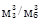 |
|||||
|
1,4 |
1.6 |
1,8 |
2,0 |
2,4 |
2,8 |
|
|
10 |
0,55 |
0,52 |
0,48 |
0,45 |
0,42 |
0,l |
|
20 |
0,65 |
0,63 |
0,6 |
0,58 |
0,50 |
0,54 |
3.12. Цемент необходимо хранить по видам и маркам раздельно не более 2-х месяцев во избежание его слеживания и потери активности в условиях, исключающих распыление и увлажнение.
3.13. Заполнители хранятся в специально отведенных местах с твердым покрытием в штабелях или буртах. Увлажнение, загрязнение и разрушение заполнителей во время хранения не допускается, так как ведет к значительному ухудшению их качества.
Открытые площадки для храпения заполнителей должны быть ограждены для предотвращения смешивания с заполнителями других фракций и карьеров.
В районах с суровыми зимними условиями складские помещения с заполнителями необходимо оборудовать отопительными приборами.
3.14. Вода для приготовления бетонной смеси должна соответствовать требованиям ГОСТ 23732-79.
3.15. Для армирования монолитных железобетонных обделок должна применяться арматурная сталь, удовлетворяющая требованиям СНиП 2.03.01-84, ГОСТ 13015.0-83, ГОСТ 13015.1....3-81, ГОСТ 13015.4-84.
3.16. Виды арматурной стали для армирования обделок:
стержневая гладкая классов А-1 - ГОСТ 5781-82*;
стержневая периодического профиля классов Aс-II, A-II, A-III, A-IV, А-IIIв - ГОСТ 6727-80*;
стержневая термически упрочненная периодического профиля класса Ат-IIIс, Ат-IIIв - ГОСТ 10884-81;
проволочная периодического профиля из низкоуглеродистой стали класса Вр-I диаметром 3-5 мм - ГОСТ 6727-80*.
3.17. Марки арматурных сталей для армирования монолитных обделок:
класс А-I – Ст3пс3; Ст3сп3; Ст3кп3; В Ст2сп2; В Ст3кп2; В Ст3пс2; В Ст3Гпс2;
класс A-II - B Ст5сп2; В Ст5пс2; 18Г2С;
класс Ас-II - 10ГТ;
класс А-14, А - 35Гс; 25Г2С;
класс A-IV - 80C; 20ХГ2Ц;
класс A-IIIв - 25Г2С; 35ГС;
класс Ат-IIIС - БСт5пс; БСт5сп;
класс Ат-IIIв - 25Г2С; 20ХГС2.
3.18. При выборе вида и марок стали для закладных деталей и арматуры, устанавливаемой по расчету, должны учитываться температурные условия эксплуатации тоннелей и характер их нагружения.
При сооружении тоннелей в суровых зимних условиях не допускается применение стали марки В Ст3пс2.
3.19. Арматуру классов A-IV, A-III применяют в качестве продольной, классов A-I, A-II-поперечной и продольной арматуры. Арматуру классов A-III, Bp-I, A-II и A-I рекомендуется применять в виде сварных каркасов и сварных сеток.
В качестве конструктивной арматуры применяется проволока класса B-I.
3.20. Сварные арматурные изделия - сварные рулонные сетки и плоские каркасы и отдельные стержни со сварными соединениями и закладные детали должны удовлетворять требованиям ГОСТ 10922-75, ГОСТ 8478-81.
3.21. Для закладных деталей применяется прокатная углеродистая сталь В Ст3кн2; В Ст3пс6; В Ст3гнс5; В Ст3сп5 в соответствии с ГОСТ 380-71.
3.22. Для технологических и монтажных петель должна приниматься горячекатаная арматурная сталь класса A-I марок В Ст3сп2 и В Ст3пс2 или класса Ас-II марки 10 ГТ;
3.23. На элементах арматурных изделий и закладных деталях не должно быть отслаивающихся ржавчины и окалины, следов масла, битума и других загрязнений.
Перед возобновлением бетонирования после вынужденного перерыва арматура должна быть повторно очищена от ржавчины и загрязнений.
3.24. При эксплуатации тоннелей в условиях химической агрессии арматурные изделия необходимо защитить от коррозии в соответствии со СНиП 2.03.11-85.
3.25. Защита арматуры от коррозии осуществляется нанесением на ее поверхность неметаллических покрытий или изменением химического состава металлов в поверхностных слоях: оксидированием; азотированном, фосфатированием.
При сульфатной агрессии грунтовых вод необходимо применять сульфатостойкие портландцементы.
3.26. Транспортирование и хранение арматуры выполняют по ГОСТ 7566-81.
3.27. Типы, конструктивные элементы и способы сварки соединений, выполняемых контактной, точечной и ванной сваркой, должны удовлетворять требованиям ГОСТ 14098-91.
3.28. Для повышения класса бетона на осевое растяжение и повышения трещиностойкости в бетонную смесь следует вводить дисперсные металлические волокна - фибpы длиной 30-50 мм, диаметром 0,3-0,5 мм в количестве 0,5-2% от объема бетонной смеси. Фибры могут быть круглого поперечного сечения (при изготовлении их из проволоки), прямоугольного (при изготовлении из листовых материалов) или фрезерованные.
3.29. С целью регулирования подвижности бетонной смеси, снижения расхода цемента, повышения прочности, водонепроницаемости и морозостойкости в бетонную смесь следует вводить химические добавки.
Химические добавки выбирают с учетом следующих факторов: технологического эффекта; возможности поставки; имеющихся на объекте условий приемки, хранения, приготовления и дозирования добавок в бетонную смесь; отсутствия негативного эффекта воздействия на природную среду и организм человека в стадиях возведения и эксплуатации тоннельной конструкции.
3.30. В качестве добавок к бетону рекомендуется применять индивидуальные продукты (или их сочетания), номенклатура которых приведена в табл. 3, а дозировки - в табл. 4.
Объем вовлеченного воздуха в бетонной смеси, предназначенной для получения морозостойких бетонов с F200 и больше, должен составлять 2-5%.
Номенклатура химических добавок
|
Добавки |
Условное обозначение |
Стандарт или технические условия |
Содержание сухого вещества, % от массы цемента |
Вид поставки |
Основной характер воздействия на бетонную смесь |
Достигаемый эффект |
|
Лигносульфонат технический модифицированный |
ЛСТМ-2 |
13-287-85 |
47-50 |
В железнодорожных цистернах |
Пластификация |
Снижение расхода цемента, повышение прочности |
|
Суперпластификатор |
С-3 |
ТУ 6-14-625 |
33 |
В цистернах или стальных бочках по ГОСТ 13950-76 |
То же |
Снижение расхода цемента, повышение прочности |
|
Сульфитно-дрожжевая бражка |
СДБ |
ОСТ 13-183-83 |
50-76 |
В бумажных мешках или цистернах |
» |
Улучшение удобоукладываемости, снижение расхода цемента |
|
Смола нейтрализованная воздухововлекающая |
СНВ |
ТУ 81-05-7-74 |
100 |
В деревянных бочках |
Воздухововлечение |
Повышение морозостойкости |
|
Смола древесная омыленная |
СДО |
ТУ 13-0502-183 |
50 |
В железнодорожных цистернах, деревянных бочках |
То же |
Повышение морозостойкости и коррозионной стойкости |
|
Мелассная упаренная последрожжевая барда |
УПБ |
ОСТ 18-126-83 |
50-60 |
В бочках или железнодорожных цистернах |
Повышение стабилизации, уплотнения бетонной смеси |
Улучшение удобоукладываемости, снижение расхода цемента |
|
Щелочной сток производства капролактама |
ЩСПК |
ТУ 113-03-488-84 |
40-70 |
В цистернах, металлических бочках |
Воздухововлечение, пластификация |
Повышение водонепроницаемости и морозостойкости |
|
Микрокремнезем |
МК |
ТУ 14-5-157-87 |
100 |
В мешках или цистернах |
Повышение связности, уплотнение бетонной смеси |
Повышение прочности, водонепроницаемости, снижение расхода цемента |
|
Ацетоформальдегидная смола |
АЦФ-3 |
ТУ 59 02.039.57-83 |
65-85 |
В металлических бочках |
Повышение удобоукладываемости, жизнеспособности бетонной смеси |
Повышение водонепроницаемости, прочности, морозостойкости, снижение расхода цемента |
|
Альфа |
«Альфа» |
ТУ 11-91 ЕТО 029.026 ТУ |
6-20 |
В цистернах или металлических (пластмассовых) бочках |
Повышение стабилизации, уплотнение бетонной смеси |
Предотвращение расслаивания бетонной смеси, повышение водонепроницаемости и прочности |
Дозировки химических добавок
|
№ пп |
Добавка |
Количество компонентов добавок в пересчете на сухое вещество, % от массы цемента |
|
1 |
С-3 |
0,3-1,0 |
|
2 |
ЛСТМ-2 |
0,1-0,3 |
|
3 |
СДБ |
0,1-0,3 |
|
4 |
АЦФ-3 |
0,1-0,2 |
|
5 |
СНВ+СДБ |
(0,003-0,03)+(0,1-0,3) |
|
6 |
СНВ+ЛСТМ-2 |
(0,003-0,03)+(0,1-0,3) |
|
7 |
СНВ+С-3 |
(0,003-0,03)+(0,3-1,0) |
|
8 |
С-3+МК* |
(0,3-1,0)+(8-20) |
|
9 |
С-3+ЩСПК |
(0,3-0,5)+(0,1-0,3) |
|
10 |
«Альфа» |
0,04-0,6 |
|
11 |
С-3+«Альфа» |
(0,5-1,0)+(0,04-0,6) |
|
12 |
УПБ |
0,1-0,3 |
|
13 |
СДО |
0,003-0,05 |
|
* Для неармированных конструкций. Допускается применение МК в армированных конструкциях в опытном порядке при дозировке, не превышающей 15% от массы цемента. |
||
4.1. Методика подбора и пример состава бетона с химическими добавками приведены в рекомендуемом приложении 5.
4.2. Добавки вводятся в бетонную смесь, как правило, с водой затворения, в виде 5-20%-ных водных растворов. При использовании комплексных добавок растворы их компонентов, как правило, готовятся и дозируются отдельно. Необходимая концентрация достигается путем растворения определенного количества добавки в воде. Концентрацию добавок контролируют также по плотности приготовленных растворов. Плотность водных растворов различных добавок в зависимости от концентрации приведена в справочном приложении 6.
4.3. Схема установки для приготовления и объемного дозирования в бетонную смесь водных растворов одного из сухих компонентов комплексной добавки приведена на рис. 1.
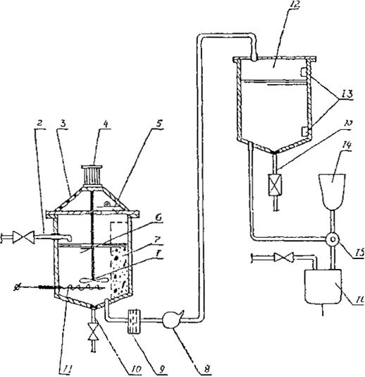
Рис. 1. Схема установки для приготовления водных растворов химических добавок:
1 - лопастная мешалка; 2 - трубка подачи воды; 3 - рамка; 4- элсктродвигатель; 5 - загрузочный люк; 6 - приготовительная емкость; 7 - корзина для растворения твердой добавки; 8 - центробежный насос; 9 - фильтр; 10 - дренажные трубы; 11 - нагревательное устройство; 12 - расходная емкость; 13 - мембранные датчики уровня; 14 - объемный дозатор; 15 – гидрораспределитель; 16 - водный дозатор
Добавка растворяется в приготовительной емкости 6, снабженной устройством 11 для подогрева раствора до 50-70°С. Добавку вводят через люк 5 в корзину 7. Раствор перемешивается механической мешалкой 1, снабженной электродвигателем 4, который закреплен на крышке 3. Воду подают через трубку 2. Приготовленный раствор перекачивается центробежным насосом 8 через фильтр 9 в расходную емкость 12, снабженную датчиком уровня. 13. Из расходной емкости раствор через гидрораспределитель 15 направляется в объемный дозатор 14. Отмеренная доза подается в дозатор воды 16, а оттуда вместе с водой затворения - в бетоносмеситель. Для слива остатков раствора и промывки емкости имеется трубка 10.
4.4. Содержание добавки в приготовленном растворе определяют по плотности раствора, измеренной ареометром при температуре 20°С (см. приложение 6).
4.5. По мере приготовления растворы добавок поступают в расходные емкости, а оттуда через дозаторы направляются в бетоносмеситель с водой затворения.
4.6. Необходимые количества растворов вводятся в бетонную смесь на БСУ с помощью объемных или весовых дозаторов.
Техническая характеристика весового дозатора 6.145 АД-30-2 БЖ, выпускаемого промышленностью, приведена в справочном приложении 7.
4.7. Объемное дозирование рекомендуется осуществлять с помощью дозатора ЦНИИС, который автоматически отмеряет любые заданные дозы в диапазоне от 0,5 до 2,0 л и выдает их в бетоносмеситель. При этом отпадает необходимость устройства расходных баков в бункерном отделении БСУ, т.к. функции перекачки и дозировки раствора сосредоточены в одном блоке.
4.8. Погрешность дозирования соответствует ГОСТ 7473-85. Дозаторы могут применяться на БСУ циклического и непрерывного действия.
4.9. Перед перекачиванием растворов добавок из одной емкости в другую их следует тщательно перемешивать.
При перемешивании растворов поверхностно-активных веществ (ЛСТМ-2, СНВ, С-3, СДО и др.) необходимо учитывать возможность пенообразования, особенно при барбатировании сжатым воздухом. Для уменьшения вспенивания рекомендуется врезку трубопроводов подачи растворов добавок предусматривать в нижней части емкости.
При механическом перемешивании лопасти мешалки следует располагать как можно ближе к днищу приготовительной емкости. Скорость вращения вала мешалки не должна превышать 60 об/мин.
Растворы добавок надо хранить в чистых емкостях при положительной температуре.
Концентрация водных растворов добавок устанавливается в зависимости от возможностей обеспечения точности дозирования и от консистенции раствора, удобной для его хранения и перекачивания.
Время наполнения и опорожнения дозаторов для добавок не должно превышать соответствующего времени работы водного дозатора.
4.10. При наличии расходных баков их объем устанавливается в зависимости от производительности БСУ из расчета получения раствора добавки на срок не менее одной смены.
4.11. Емкости следует регулярно промывать водой. Для этого необходимо предусмотреть очистные сооружения перед отводом стоков в канализацию.
5.1. Бетонную смесь приготавливают, транспортируют и укладывают в соответствии с ГОСТ 7473-85, СНиП 3.03.01-87 и настоящими Правилами.
5.2. Приготовление бетонной смеси осуществляется бетоносмесительными узлами общего назначения требуемой производительности.
Узел должен быть оборудован технологической линией приема, приготовления, дозирования и введения в бетонную смесь поверхностно-активных добавок и других добавок согласно проекту.
5.3. Дозирование компонентов бетонной смеси следует производить по массе. Точность дозирования должна быть не менее 2% для цемента, воды и добавок и не менее 2,5% для заполнителей. Допускается дозирование по объему воды и добавок, вводимых в бетонную смесь в виде водных растворов. Дозировку компонентов следует корректировать в процессе приготовления бетонной смеси с учетом данных контроля показателей свойств цемента, влажности, гранулометрии заполнителей и контроля прочности (приложение 8).
5.4. Порядок загрузки компонентов бетонной смеси в бетоносмеситель должен устанавливаться строительной лабораторией для конкретных материалов и применяемого бетоносмесительного оборудования путем оценки подвижности, однородности и прочности бетона. Продолжительность перемешивания следует устанавливать по методике, изложенной в рекомендуемом приложении 9.
5.5. Бетонную смесь целесообразно приготавливать в бетоносмесителях циклического действия или автобетоносмесителях непосредственно на объекте.
5.6. Рекомендуется применять отечественные бетоносмесительные установки, технические характеристики которых приведены в приложении 10.
5.7. Бетонная смесь, доставленная к месту укладки должна иметь степень расслоения не более 5%, водоотделение не более 2% и отклонение от заданной подвижности не более 2 см.
Для предотвращения расслоения бетонную смесь необходимо транспортировать с минимальным количеством перегрузок.
5.8. Бетонную смесь с добавками необходимо укладывать за опалубку не позднее чем через 1,5 ч после ее приготовления При необходимости более длительной транспортировки смеси требуется увеличение ее исходной подвижности, что ведет к повышенным расходам цемента.
Технологические схемы организации и производства работ
6.1. Технологические схемы производства бетонных работ при сооружении тоннелей следует назначать в зависимости от крепости пород, способов проходки, глубины заложения, протяженности и профиля тоннеля, а также от применяемых средств механизации.
Выбор схемы осуществляют на основании технико-экономических расчетов в зависимости от перечисленных факторов.
6.2. Возведение монолитной обделки следует производить по одной из технологических схем:
по параллельной - возведение обделки сразу после крепления выработки;
по последовательной - с отставанием во времени от проходки и крепления выработки.
6.3. Бетонирование очередного участка осуществляют после завершения следующих работ:
доработки контура выработки до проектного очертания;
отвода источников обводнения выработки путем местного дренажа;
очистки бетонного основания от битума, масел, льда, промывки и насечки;
установки арматурных каркасов, рабочей и конструктивной арматуры;
установки опалубки в проектное положение с нанесенной антиадгезионной смазкой;
перекладки магистральных трубопроводов.
Транспортирование бетонной смеси
6.4. Бетонную смесь следует приготавливать на бетонном узле, расположенном непосредственно на строительной площадке.
Допускается доставлять бетонную смесь с централизованных бетоносмесительных узлов, при этом более целесообразно доставлять сухую смесь.
Введение химических добавок и фибр в бетонную смесь целесообразно осуществлять непосредственно на строительной площадке при затворении бетонной смеси. Допускается введение фибр на централизованных бетонных узлах как в сухую, так и затворенную бетонную смесь.
6.5. Бетонную смесь доставляют на строительную площадку в автобетоносмесителях. Сухую смесь при передвижении не перемешивают, затворение смеси водой производят непосредственно на строительной площадке. При доставке затворенной бетонной смеси необходимо, чтобы время с момента приготовления до начала укладки не превышало: для тяжелого бетона - 1,5 ч, для легкого - 1,0 ч.
При транспортировании фибробетонной смеси следует использовать автобетоносмесители, имеющие скорость вращения барабана до 20 об/мин. Загружать барабан рекомендуется на 70-80% его вместимости.
Время с момента приготовления до начала укладки бетонной смеси устанавливается лабораторией в зависимости от качества цемента и дальности подачи бетонной смеси.
6.6. Бетонную смесь следует транспортировать в автобетоносмесителях, технические характеристики которых приведены в приложении 11.
6.7. Скорость вращения барабана автобетоносмесителя при перемешивании смеси должна быть 11-14 об/мин.
6.8. Коэффициент использования смесительного барабана зависит от вида смеси и изменяется в пределах: 0,53-0,57 - при загрузке сухой смесью; 0,65-0,70 - при загрузке частично затворенной смесью; 0,75-0,80 - при загрузке готовой смесью.
6.9. Бетонную смесь доставляют к месту укладки по готовому тоннелю, по штольням, через стволы шахт и подходные выработки или через специально пробуренные скважины:
в подвижных вертикальных пневмобетоноподатчиках, входящих в проходческий комплекс и не имеющих принудительного перемешивания;
в пневмобетононагнетателях с горизонтальным валом для принудительного перемешивания;
в опрокидных вагонетках.
Бетонирование и применяемое оборудование
6.10. Комплекс оборудования для укладки бетонной смеси должен включать: металлическую опалубку; бетоноукладочную установку; бетоноводы; вибраторы.
6.11. Опалубка должна обеспечить форму обделки с предусмотренными проектом людскими нишами, камерами, отводами и т.п. Необходимый класс и допуски на установку опалубочных систем и арматурного каркаса определяют коэффициентом точности:
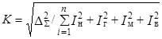
где DS - суммарный допуск, Iн Iг Iв - единичные допуски, соответственно на изготовление элементов опалубки, геодезические разбивочные работы, монтаж деталей опалубки и отклонения опалубки от вертикали.
6.12. Опалубка должна иметь механизмы ее отрыва от затвердевшего бетона, перемещения и фиксирования в рабочем положении.
6.13. Для обеспечения требований пп. 6.11 и 6.12 должны применяться передвижные крупногабаритные блочные, объемно-переставные или скользящие опалубочные комплексы в соответствии с ГОСТ 23478-79. При невозможности использования механизированных передвижных опалубок применяют инвентарные мелкощитовые опалубки универсального назначения по ГОСТ 23477-79.
6.14. При выборе типа опалубки следует руководствоваться скоростью проходки тоннеля и требованием минимального времени выдержки бетона в опалубке.
При достаточном фронте работ опалубка выбирается наибольшей длины с тем, чтобы обеспечить минимальное количество технологических швов обделки. При бетонировании у забоя ширина секции должна быть не более 1 метра.
6.15. Наиболее эффективные, апробированные конструкции опалубок приведены в рекомендуемом приложении 12.
При сборке, эксплуатации и монтаже следует руководствоваться инструкцией завода-изготовителя.
Арматурные работы
6.16. Железобетонные обделки армируются однорядной и двухрядной рабочей и конструктивной арматурой в соответствии с проектом. При однорядном армировании для фиксирования положения вертикальных сеток относительно опалубки применяют фиксаторы защитного слоя, а относительно противоположной стороны - гнутые пространственные или плоские каркасы.
При двухрядном армировании защитный слон обеспечивают установкой фиксаторов с обеих сторон, а фиксированное расстояние между сетками - с помощью каркасов.
6.17. В качестве фиксаторов положения арматуры должны использоваться специальные кронштейны, скобы, пружины из пластмассы решетчатые, цилиндрические или из цементно-песчаного раствора.
Величина отклонения арматуры от проектного положения принимается в соответствии с требованиями главы СНиП 3.03.01-87.
Бетоноукладочные установки
6.18. Бетоноукладочные установки должны комплектоваться на базе высокопроизводительных и надежных бетононасосов и пневмобетононагнетателей.
6.19. Пневмобетононагнетатели предназначены для приема готовой бетонной смеси с бетоносмесительного узла, расположенного за пределами тоннеля, дополнительного перемешивания, подачи смеси в заопалубочное пространство и частичного уплотнения ее.
6.20. Пневмобетононагнетатели монтируются на рельсовом и пневмоходу. Состоят из сосуда высокого давления, смесителя, привода смесителя и пульта управления. Сосуды оборудованы загрузочными и очистными люками с самоуплотняющимися крышками, системой подачи воздуха под давлением, выпускным патрубком для бетонной смеси, регулировочными клапанами. В комплект пневмобетононагнетателя входят бетоноводы, собираемые из жестких (стальных) и мягких (резиновых) секций.
6.21. Пневмобетононагнетатели являются агрегатами циклического действия. Загружаемая порция бетонной смеси (до 3,3 м3) подается к месту укладки. Затем цикл повторяется с загрузки очередной порции смеси.
Технические характеристики пневмобетононагнетателей приведены в рекомендуемом приложении 13.
6.22. Бетононасосы предназначены для дополнительного перемешивания, непрерывной подачи за опалубку бетонной смеси, поступающей от бетонного узла. Бетононасосы монтируются на рельсовом и пневмоходу. Они состоят из загрузочной емкости, двухцилиндрового насоса с выпускными клапанами, привода, пульта управления, бетоноводов. Загрузочная емкость имеет защитную решетку для отделения и удаления частиц заполнителя, превышающих допустимый размер.
6.23. Тип бетононасоса выбирают в зависимости от требуемой производительности, дальности подачи по вертикали и по горизонтали.
Технические характеристики бетононасосов приведены в рекомендуемом приложении 13.
Бетоноукладочные установки должны монтироваться и эксплуатироваться в строгом соответствии с инструкцией завода-изготовителя.
6.24. Бетоноводы составляют из жестких и гибких секций. Гибкие секции включают для возможности маневрирования бетоноукладочной машиной относительно бетоновода.
Жесткие секции выполняют прямыми длиной 3; 1,5; 0,9; 0,6 и 0,3 м и угловыми (колена) под углом 90°, 45°, 22°30‘, 11°15‘. Для дополнительного поддува в изломе бетоновода должны применяться секции с вваренным патрубком воздуховода, а для оперативного разъединения бетоновода - быстроразъемные секции. В комплект бетоновода входит устройство для очистки и ликвидации пробок.
6.25. Бетоноводы должны монтироваться с минимальным числом изгибов и наименьшей протяженности. При этом достигается наименьшее давление выдавливания бетонной смеси, снижение расслаивания, повышение производительности агрегата и его безопасности. Характерная схема бетоноводов приведена на рис. 2.
Бетононагнетатель 7 соединяется с бетоноводом 2 гибким шлангом 6. Для подъема на отметки бетонирования, близкие к 10 м, выполняют два отвода 3 под углом 45° и радиусом гнутья 1,8 м. В другом случае, как вариант 5, выполняются два отвода 4 под углом 90°. По мере бетонирования бетоновод и бетононагнетатель смещаются в сторону опалубки 1 без нарушения герметичности за счет гибкой вставки или снимается одна секция бетоновода. Наклонная и верхняя части бетоновода могут опираться на специальную подвижную раму.
6.26. Главным элементом бетоновода является соединение (стык) между секциями.
Рис. 2. Схема расположения бетоновода при укладке бетонной смеси:
1 - опалубка; 2 - бетоновод диаметром 150 мм; 3 - отвод под углом 45°, радиус гнутья 1,8 м; 4 - отвод под углом 90°, радиус гнутья 1,8 м; 5 - вариант расположения бетоновода; 6 - быстроразъемное звено; 7 - агрегат для укладки бетона
Гибкие шланги оборудованы резьбовыми муфтами (рис. 3,а), жесткие секции соединяют с помощью хомутов с замыкающими клиньями (рис. 3,б), муфтами из полуколец с накидной гайкой (рис. 3,в) или быстродействующими замками (рис. 3,г).
6.27. Перед началом бетонирования по бетоноводу пропускают некоторое количество воды, проталкивающее мягкий пыж и порцию мелкозернистого бетона с повышенным содержанием цемента для смазки труб. Используется также продувка бетоновода.
После окончания работы бетоновод промывают водой.
Техническая эксплуатация бетоноводов осуществляется в соответствии с инструкцией завода-изготовителя.
Бетонирование
6.28. При организации бетонирования предпочтение следует отдавать размещению оборудования в последовательности: проходческий комплекс–бетоноукладчик-опалубка (рис. 4,а). В сложных горно-геологических условиях опалубка размещается непосредственно за проходческим комплексом (рис. 4,б).
6.29. В процессе бетонирования предусматриваются деформационные и антисейсмические швы.
Рис. 3. Варианты стыков элементов бетоновода:
а - резьбовая муфта гибкого шланга; б - хомут с замыкающим клином для жестких секций; в - соединительная муфта; г - быстроразъемное соединение;
1 - резиновое уплотнение; 2 - соединительная муфта
6.30. Деформационные швы следует предусматривать в местах примыкания притоннельных сооружений к тоннелям, в местах резкого изменения типа конструкции или вида грунта для предотвращения неравномерной деформации обделки. Расстояние между деформационными швами должно быть не более 60 м.
Рис. 4. Технологические схемы размещения оборудования для бетонирования обделки:
а - первая схема; б - вторая схема; 1 - проходческий комплекс; 2 - опалубка; 3 - бетоноукладочная установка
6.31. При сооружении тоннелей в районах с повышенной сейсмичностью в монолитных бетонных и железобетонных обделках необходимо устраивать поперечные деформационные швы, которые допускают взаимное продольное смешение смежных участков обделки без силового воздействия их друг на друга и нарушения гидроизоляции. Расстояние между антисейсмическими швами назначают в соответствии с ВСН 193-81, но не менее 16 м.
6.32. Технологические швы возникают в результате перерывов при бетонировании обделок.
6.33. Протяженность технологического шва Аш зависит от длины заходки бетонирования, прочности сопротивления сдвигу бетона, модуля упругости и усадочной деформации бетона.
6.34. Оптимальное водоцементное отношение (В/Ц)опт, при котором ранее уложенный бетон и бетон зоны технологического шва имеют высокую прочность сцепления, однородность структуры и высокую водонепроницаемость, должно быть в пределах:
1,3 Кнг£(В/Ц)опт£1,5Кнг.
6.35. При достаточном фронте работ должно быть организовано бетонирование с применением механизированной объемно-переставной опалубки.
6.36. Для расчета параметров бетонирования необходимо:
определить распалубочное время tp (приложение 14);
выбрать опалубку и длину секции, lс;
задать необходимую скорость бетонирования, Vбет;
выбрать оборудование для механизированной подачи бетонной смеси в соответствии с необходимым объемом укладки;
определить интенсивность бетонирования, 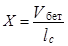
определить необходимое число секций опалубки
N=X×tp;
определить длину участка бетонирования
L=N×lc
6.37. В процессе укладки бетонной смеси необходимо вести наблюдение за состоянием опалубки. Возникающие деформации опалубки должны быть немедленно устранены, для чего необходимо приостановить бетонирование.
6.38. Укладка бетона должна вестись одновременно с двух сторон горизонтальными слоями от пят к замку с перестановкой бетоновода по высоте через 2 метра.
При подведении стен под готовый свод в месте примыкания должен быть оставлен зазор до 400 мм, который заполняется тщательно уплотняемой жесткой бетонной смесью после установки трубок для последующего нагнетания за обделку.
6.39. Уплотнение бетонной смеси осуществляют глубинными вибраторами - не менее трех одновременно. Расстояние между вибраторами и шаг их перестановки должен быть равен радиусу действия, который указан в паспорте. Следует учитывать, что радиус действия вибратора не превышает 25-35 см. Высота слоя бетона не должна превышать 0,8 высоты рабочей чисти вибратора. Заглубление вибратора в предыдущий слой должно быть не менее 5 см.
Следует избегать касания вибраторами стержней арматуры чтобы не допускать чрезмерного разжижения смеси и снижения ее сцепления с затвердевшим бетоном.
Уплотнение бетонной смеси площадочными вибраторами, устанавливаемыми на опалубках специальной конструкции, допускается при подвижности бетонной смеси более 15 см по осадке конуса и при толщине обделки не более 30 см.
7.1. Требования настоящего раздела распространяются на производство бетонных работ при температуре окружающего грунта и воздуха в подземных выработках от +5°С до -5°С и предусматривают обеспечение набора прочности бетоном по всем сечениям конструкций в заданные сроки при минимальном расходе тепла.
7.2. В указанных в п. 7.1 условиях необходимо использовать специальные способы обеспечения температурных условий транспортирования, укладки и твердения бетона в соответствии со СНиП 3.03.01-87. В качестве основного способа следует, как правило, применять подогрев укладываемой бетонной смеси. Температурный режим бетонирования должен быть приведен в проекте производства работ. При нормальных температурных условиях в выработке, но при пониженной температуре воздуха на дневной поверхности надо подогревать бетонную смесь до температуры, предотвращающей ее остывание ниже +5°С в процессе транспортирования.
7.3. При температуре в выработке ниже -5°С грунтовый массив и воздух перед укладкой бетона следует подогревать до пределов, указанных в п. 7.1. В малотрещиноватых скальных грунтах, не теряющих устойчивости при оттаивании, массив и воздух целесообразно подогревать до положительной температуры. В противном случае температура массива после подогрева не должна превышать 0°С, что обеспечивает устойчивость горного массива.
7.4. К параметрам теплового режима, устанавливаемым при производстве работ, следует относить:
начальную температуру подогрева бетонной смеси при ее выгрузке из бетоносмесительной установки;
температуру бетонной смеси по окончании транспортирования;
то же по окончании бетонирования конструкции;
расчетную конечную температуру бетона в момент снятия опалубки;
время выдержки бетона в опалубке, обеспечивающее набор бетоном необходимой распалубочной прочности при выбранных температурах твердения.
Указанные параметры следует определять в такой последовательности:
назначение распалубочной прочности бетона в конструкции;
определение расчетной конечной температуры бетона и времени выдержки его в опалубке;
установление температуры бетонной смеси в момент окончания бетонирования;
то же в момент окончания транспортирования;
определение начальной температуры бетонной смеси.
7.5. Расчетную конечную температуру бетона Тр следует определять предварительно по табл. 5, исходя из условия обеспечения требуемой распалубочной прочности бетона в установленный срок. Принятую температуру Тр следует корректировать по результатам испытаний на сжатие бетонных образцов, хранившихся в течение срока выдержки на месте укладки бетона при одинаковой с ним температуре. Если прочность образцов окажется не ниже распалубочной, в качестве Тр следует принимать температуру, которую имел бетон конструкции в момент снятия опалубки. В противном случае необходимо увеличить срок выдержки бетона или повысить температуру в зоне укладки бетона и повторить испытания образцов.
|
Расчетная конечная температура Тр, °С |
Прочность бетона на сжатие, % от R28 нормального твердения, при выдержке бетона на портландцементе без ускоряющих добавок, сут. |
||||||
|
2 |
3 |
5 |
7 |
10 |
15 |
28 |
|
|
1 |
- |
10 |
20 |
30 |
38 |
50 |
65 |
|
5 |
- |
15 |
28 |
40 |
50 |
60 |
80 |
|
10 |
- |
25 |
38 |
48 |
60 |
70 |
90 |
|
15 |
25 |
33 |
50 |
60 |
72 |
82 |
100 |
|
20 |
30 |
40 |
55 |
68 |
80 |
90 |
105 |
|
25 |
35 |
45 |
60 |
75 |
85 |
95 |
110 |
|
30 |
40 |
55 |
65 |
80 |
89 |
97 |
- |
|
35 |
45 |
60 |
70 |
85 |
92 |
100 |
- |
При переменных толщине конструкции и температуре бетона за Тр следует принимать минимальную температуру. При этой же температуре должны выдерживаться и бетонные образцы.
7.6. Для уменьшения расхода тепла на подогрев воздуха в тоннеле рекомендуется поддерживать повышенную температуру только на участке производства бетонных работ. С этой целью участок бетонирования рекомендуется ограждать от остальной части выработки шторными завесами и подавать подогретый воздух на этот участок по специальному утепленному воздухопроводу, отделенному от общей вентиляционной сети.
7.7. Температуру бетонной смеси в момент окончания бетонирования обделки тоннеля tукл, °С, следует определять по формуле
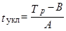
где А и В - коэффициенты, принимаемые по табл. 6 и 7.
7.8. Допускается снижение температуры tукл, против значений, указанных в п. 7.7, в случае укладки бетонной смеси с высокой экзотермией цемента в конструкции толщиной свыше 0,5 м, а также применения тепловой защиты опалубки в виде теплоизоляции ее поверхности (войлоком, поролоном и др.), шторных завес из плотной ткани на участках бетонирования и т.д. Величина tукл при этом должна быть установлена опытным путем и быть такой, чтобы к моменту распалубки температура бетона была не ниже Тр.
7.9. Температура бетонной смеси в момент окончания транспортирования должна приниматься на 1-2°С выше температуры tукл с учетом остывания смеси в процессе ее укладки в опалубку
tтр= tукл+(1¸2)°С.
7.10. Температуру подогрева бетонной смеси t0, °С, следует назначать с учетом ее остывания в процессе транспортирования. При транспортировании смеси в емкостях 2-3 м3 и более t0 рекомендуется рассчитывать по формуле
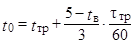
где tв - температура воздуха, °С; tтр - время транспортирования смеси, мин.
При температуре воздуха tв³5°С следует принимать t0=tтр.
|
Температуря в выработке, °С |
Значения коэффициентов А и В для неутепленной опалубки при продолжительности твердения бетонов t, ч |
||||||||||
|
до укладки бетона, t1 |
с момента укладки бетона, t2 |
18 |
24 |
36 |
48 |
72 |
|||||
|
А |
В |
А |
В |
А |
В |
А |
В |
А |
В |
||
|
-3 |
-3 |
0,36 |
-1,9 |
0,28 |
-2,2 |
0,17 |
-2,6 |
0,12 |
-2,5 |
0,08 |
-2,8 |
|
-3 |
+5 |
0,38 |
-1,1 |
0,34 |
-1,1 |
0,27 |
-0,7 |
0,25 |
-0,4 |
0,18 |
0,2 |
|
-3 |
+10 |
0,38 |
-0,7 |
0,34 |
-0,5 |
0,27 |
0,2 |
0,25 |
0,6 |
0,18 |
1,5 |
|
-3 |
+15 |
0,39 |
-0,5 |
0,34 |
0,2 |
0,28 |
1,5 |
0,25 |
1,6 |
0,18 |
3,1 |
|
-3 |
+20 |
0,40 |
-0,2 |
0,34 |
0,8 |
0,29 |
1,8 |
0,25 |
2,7 |
0,18 |
4,5 |
|
0 |
+5 |
0,38 |
0,2 |
0,32 |
0,3 |
0,24 |
0,4 |
0,20 |
1,2 |
0,14 |
1,7 |
|
+5 |
+5 |
0,38 |
2,4 |
0,31 |
2,8 |
0,19 |
3,2 |
0,12 |
4,2 |
0,08 |
4,2 |
Примечания: 1. Коэффициенты А и В при промежуточных значениях t1, t2 и t определяются линейной интерполяцией.
2. Рекомендуется учитывать, что вследствие прогрева выработки воздухом с температурой t1 в период, предшествующий бетонированию, естественная температура пород, находящаяся в пределах от -5 до +5°С, существенного влияния на температуру твердеющего бетона не оказывает.
|
Температуря в выработке, °С |
Значения коэффициентов А и В для опалубки, утепленной слоем пенопласта толщиной 3 см, при продолжительности твердения бетона t, ч |
||||||||||
|
до укладки бетона, t1 |
с момента укладки бетона, t2 |
18 |
24 |
36 |
48 |
72 |
|||||
|
А |
В |
А |
В |
А |
В |
А |
В |
А |
В |
||
|
-5 |
-5 |
0,48 |
-2,2 |
0,45 |
-2,3 |
0,42 |
-2,2 |
0,40 |
-2,3 |
0,36 |
-2,7 |
|
0 |
0 |
0,47 |
-0,2 |
0,45 |
-0,2 |
0,43 |
-0,1 |
0,40 |
-0,2 |
0,35 |
-0,2 |
|
+5 |
+5 |
0,52 |
1,2 |
0,49 |
1,6 |
0,46 |
1,8 |
0,41 |
2,0 |
0,35 |
2,3 |
|
+10 |
+10 |
0,58 |
2,3 |
0,52 |
2,8 |
0,45 |
3,7 |
0,41 |
4,2 |
0,35 |
4,6 |
Примечание. Коэффициент теплопроводности l=0,1 ккал/(м×ч×°С).
7.11. Примеры расчета температурного режима бетонирования конструкций и выдерживания бетона приведены в приложении 15.
7.12. Температуры tукл, tтр и t0, установленные расчетом, должны корректироваться в производственных условиях с учетом результатов измерения температуры бетона.
7.13. Подогрев бетонной смеси в бетоносмесительных установках до температуры t³35°С не допускается во избежание быстрого схватывания.
7.14. Подогрев бетонной смеси следует осуществлять путем подогрева воды и заполнителей. Допускается применение сухих заполнителей, содержащих наледи на зернах, в неотогретом состоянии при условии обеспечения требуемой температуры подогрева бетонной смеси. Запрещается применять заполнители, содержащие смерзшиеся комья.
8.1. При возведении подземных конструкций необходимо предусматривать их защиту от агрессивного воздействия подземных вод и обводненности и связанных с нею мерзлотно-наледных явлений.
8.2. При разработке мероприятий по защите бетонных конструкций от агрессивного воздействия подземных вод надлежит руководствоваться главой СНиП 2.03.11-85 по защите строительных конструкций от коррозии.
8.3. Оценку степени агрессивного воздействия подземных под необходимо производить с учетом химического состава и температуры подземных вод, а также величины гидростатического давления на обделку.
8.4. Химическому анализу должна подвергаться вода со всех обводненных участков тоннельных выработок, отбираемая из наиболее крупных течей. Отбор проб и химический анализ следует производить заблаговременно (до бетонирования), оставляя возможность реализации, в случае необходимости, защитных мероприятий при возведении обделки.
8.5. Отбор проб следует производить непосредственно из фонтанирующих и ниспадающих течей. В случае растекания течи по стене в устье источника должна быть укреплена водоотводная трубка. Пробы из источников с открытой поверхностью отбирают бутылкой (банкой) без всяких приспособлений.
Отбор проб воды из неглубоких скважин следует производить откачкой. Из глубоких скважин воду отбирают с помощью пробоотборников желоночного типа.
8.6. В процессе химических анализов определяют:
физические свойства воды (температуру, мутность, цвет, запах, вкус);
водородный показатель рН;
сухой остаток;
содержание гидрокарбонат-иона 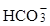 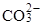 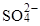
содержание свободной углекислоты СО2своб и сероводорода H2S.
8.7. Физические свойства воды, показатель рН, содержание свободной углекислоты, ионов Са2+ и должны определяться в месте отбора пробы в течение 20-30 мин, остальные анализы разрешается проводить позднее, в лаборатории.
8.8. Степень агрессивности подземных вод к бетонным конструкциям при гидростатическом давлении до 0,1 МПа следует устанавливать по СНиП 2.03.11-85, при этом суммарное содержание ионов и Сl- разрешается принимать равным менее 200 мг/л.
8.9. Фактический коэффициент фильтрации бетона следует определять в соответствии с ГОСТ 12730.5-84.
8.10. Для разработки мероприятий по предотвращению вредного воздействия замерзания подземных вод в тоннельных выработках в период эксплуатации необходимо с начала строительства тоннелей проводить контроль обводненности тоннельных выработок. Форма журнала обследования обводненности тоннеля приведена в приложении 16.
8.11. Выбор и выполнение перечисленных мероприятий, осуществляемых по специальным инструкциям, должны быть предусмотрены в проекте организации работ с тем, чтобы в эксплуатацию сдавался тоннель с «сухой» обделкой, так как ремонт тоннельных обделок на эксплуатируемых линиях весьма сложное и трудоемкое дело.
9.1. Производство работ и качество бетона контролируют в соответствии с требованиями СНиП 3.03.01-87 и настоящих Правил.
9.2. Инженерно-технические работники тоннельных отрядов при приготовлении бетонных смесей осуществляют контроль за:
качеством материалов, применяемых при приготовлении бетонных смесей, предназначенных для сооружения обделки;
состоянием оборудования для дозирования и перемешивания составляющих бетонной смеси;
состоянием ранее уложенного бетона;
подготовкой арматуры и опалубки;
качеством и правильностью приготовления бетонной смеси (удобоукладываемость, расслаиваемость и т.д.) и ее транспортирования;
правильностью дозирования рабочих растворов добавок и очередностью их введения (если добавка комплексная);
соответствием подвижности бетонной смеси требуемым значениям;
температурными условиями приготовления, укладки бетонной смеси и режимом ее твердения.
отбором контрольных кубиков бетона;
ведением исполнительной технической документации.
9.3. В состав исполнительной технической документации по производству бетонных работ входят:
паспорта, сертификаты, заключения о пригодности заполнителей и цемента для приготовления бетонной смеси, акты на испытания материалов;
акты на приемку опалубки, приемку арматурного каркаса, приемку подготовки поверхностей ранее уложенного бетона;
карточка подбора состава бетонной смеси;
акты на изготовление и испытание контрольных образцов бетона;
акт приемки бетона после снятия опалубки.
9.4. При приготовлении добавок контролируют готовность узла по приготовлению химических добавок и соответствие концентрации добавок установленной величине.
9.5. При транспортировании бетонных смесей с добавками контролируют готовность транспортных средств и время с момента приготовления бетонных смесей до укладки.
9.6. При укладке бетонных смесей с добавками контролируют удобоукладываемость, воздухосодержание, расслаиваемость (связность), температуру.
9.7. При твердении бетона контролируют температурно-влажностный режим твердения; прочность при распалубке и в 28-суточном возрасте; водонепроницаемость; морозостойкость.
9.8. Материалы для бетонных работ, допускается применять только после их всестороннего исследования и установления соответствия требованиям ГОСТа или ТУ на эти материалы. Контроль за их соответствием, требованиям ГОСТа или ТУ производится строительной лабораторией.
9.9. Объем партии материалов, от которой необходимо отбирать пробы для проведения контрольного испытания, устанавливается на основании указаний ГОСТа или ТУ на этот материал.
9.10. Поступающий на строительство цемент должен испытываться в соответствии с ГОСТ 310.1-4-76, ГОСТ 310.2-76, ГОСТ 310.3-76, ГОСТ 310.4-81.
Для ускоренного определения прочности цементного камня можно пользоваться оперативными методиками по приложению 17.
Если срок хранения цемента превышает 2 месяца, необходимо проводить контрольные испытания.
9.11. Влажность и насыпную плотность заполнителей для корректирования номинального (проектного) состава бетонной смеси определяют ежесменно.
Влажность заполнителей можно определять оперативными способами - электронным емкостным влагомером типа ЭВП-4Л12 или нейтронным, влагомером МИВ-1 МП.
9.12. Отбор проб бетонной смеси проводят по ГОСТ 10180-78.
Подвижность, среднюю плотность, показатель пористости и расслаиваемости определяют соответственно по - ГОСТ 10181.0-81, ГОСТ 10181.1-81, ГОСТ 10181.2-81, ГОСТ 10181.3-81, ГОСТ 10181.4-81. Подвижность бетонной смеси следует проверять не реже 1 раза в смену, а также при каждом изменении состава бетона. Продолжительность и качество перемешивания бетонной смеси проверяется два раза в смену.
9.13. На бетонном узле вывешивается табличка с указанием числа, месяца, номинального состава бетонной смеси, расхода материалов на замес, количества вводимых добавок, показателя подвижности бетонной смеси на выходе из бетоносмесителя.
9.14. Не реже одного раза в месяц должна проверяться правильность работы дозаторов цемента, заполнителей, воды и добавок по ГОСТ 24619-81. Каждая проверка оформляется соответствующим актом.
9.15. При дискретном дозировании цемента или других компонентов бетонных смесей для учета нарастающего итога массы следует использовать устройство для автоматического учета расхода цемента «УРЦ». Техническая характеристика и принцип работы устройства приведены в справочном приложении 18.
9.16. На узле приготовления водных растворов добавок вывешивается табличка с указанием числа, месяца, наименования добавки и плотности ее водного раствора. При составлении комплексной добавки указывается расход отдельных компонентов.
9.17. Контроль за качеством водных растворов добавок состоит в проверке ее плотности. Концентрацию рабочего раствора добавок определяют ареометром по ГОСТ 18481-81Е и табл. 1 справочного приложения 6. Не допускается использование растворов добавок, концентрация которых отличается от заданной. При отличии плотности от заданной она должна быть доведена до заданной в расчете. Растворы добавок необходимо периодически перемешивать.
9.18. Контроль воздухосодержания бетонной смеси проводят по ГОСТ 10181.3-81 не реже 1 раза в смену на выходе из бетоновода.
Подвижность и воздухосодержание дополнительно определяются при переходе на приготовление смеси из новой партии материалов.
9.19. Прочность бетона на сжатие контролируют по ГОСТ 18105-86 и ГОСТ 10180-78 на контрольных образцах.
Оценку прочности с учетом однородности следует проводить по ГОСТ 18105.0-80 и ГОСТ 18105.2-80.
9.20. Для изготовления контрольных бетонных образцов должны применяться формы, удовлетворяющие требованиям ГОСТ 22685-77.
9.21. Для ускоренного определения значений прочности бетона на сжатие следует пользоваться неразрушающими методами по ГОСТ 22690-88 (на контрольных образцах) или ГОСТ 17624-87 (непосредственно в конструкции) или по приложению 17.
9.22. Для определения коэффициента проницаемости бетона зоны технологического шва проводят две серии испытаний на бетонных образцах-цилиндрах (по 3 образца в серии) диаметром и высотой 150 мм. Первая серия изготавливается без швов, вторая - со швами с фиксированием времени перерыва. Образцы испытываются по методикам ГОСТ 21153.2-84 и ГОСТ 10180-78. Определение сцепления бетона по швам производится по методу раскалывания.
9.23. Марка бетона по водонепроницаемости определяется по ГОСТ 12730-84 в 28-суточном возрасте, а по морозостойкости - в соответствии с ГОСТ 10060-86 по достижении проектной прочности.
Прочность, морозостойкость, и водонепроницаемость бетона рекомендуется также определять на кернах, выбуренных из обделки.
9.24. Фактические марки бетона по морозостойкости и водонепроницаемости определяют при подборе составов бетона, и в дальнейшем контролируют не реже одного раза в квартал. Испытания на морозостойкость и водонепроницаемость проводятся также при изменении любого элемента технологии.
Для ускоренного определения марки бетона по морозостойкости следует пользоваться методикой, изложенной в приложении 19.
9.25. Средняя плотность бетона определяется по ГОСТ 27005-86.
9.26. Перед началом бетонирования необходимо провести проверку состояния поверхности породы, арматуры и опалубки. Результаты проверки оформляются актом на скрытые работы при участии представителей строительной лаборатории и заказчика.
9.27. Температуру транспортируемой бетонной смеси измеряют техническим термометром по ГОСТ 2823-73Е, погружая его в смесь на глубину не менее 5 см.
9.28. Контроль за режимом твердения бетона непосредственно в обделке осуществляется путем измерения температуры бетона и воздуха в тоннельной выработке в течение 28 суток (до набора марочной прочности).
9.29. При проведении контроля обводненности должны быть зафиксированы обводненные участки тоннелей и источники обводненности. К обводненным относятся участки с влажными пятнами на поверхности выработки или обделки, мокрыми поверхностями (покрытыми пленкой струящейся воды), а также участки, в пределах которых действуют следующие источники обводненности:
редкий капеж (не более 1 капли за 2 с в отдельных местах);
частый капеж (более 2 капель за 2 с в отдельных местах);
сплошной капеж (при наличии более 10 мест капежа на участке выработки длиной 10 м);
течь (расход воды до 1 л/мин);
сильная течь (расход воды более 1 л/мин).
9.30. Контроль обводненности следует производить ежемесячно с занесением результатов в специальный журнал (см. приложение 16). В процессе обследования обводненности должны быть выявлены: границы обводненных участков, характер обводненности каждого участка (наличие мест капежа, течей, дебит и температура источников) и степень обводненности участков, которая оценивается по результатам нескольких обследований в разные периоды года.
9.31. Участки и источники обводненности должны быть нанесены на схему-развертку тоннеля (карту обводненности), составленную с соблюдением и обозначением продольного и поперечного масштаба.
На развертке следует указывать, пикетаж, инженерно-геологическую и гидрогеологическую характеристики трассы тоннеля, границы обводненных участков, места расположения источников с присвоенными им номерами, характер обводненности, степень обводненности.
Карта обводненности составляется 2-3 раза в год для наиболее характерных в конкретной местности периодов наибольшей и наименьшей обводненности.
9.32. Результаты контроля обводненности передаются проектной организации, которая принимает решение о мерах по предотвращению вредных воздействий от проникновения подземных вод в выработку.
В качестве таких мер могут быть: устройство заобделочного дренажа, цементация бетона и окружающих пород, силикатизация бетона, кольматация за счет интенсивной сушки поверхности, зачеканка дефектов расширяющимся цементом, инъекция трещин эпоксидной смолой, заделка дефектов полимерными составами (преимущественно на эпоксидной смоле), нанесение на внутреннюю поверхность гидроизоляционных покрытий. Для выбора мероприятий следует использовать данные, приведенные в табл. 8.
9.33. Для контролирования бетонных работ рекомендуется вести специальные рабочие журналы (приложение 20).
9.34. Результаты контроля бетонных работ передаются проектной организации, которая намечает меры по устранению обнаруженных дефектов и недостатков.
Мероприятия по защите от проникновения вод через обделку в зависимости от характера обводненности
|
Степень обводненности |
Характер обводненности |
Проявление обводненности |
Рекомендуемые мероприятия по защите от проникновения вод через обделку |
|
I |
Очень слабая |
Стены и свод выработки сухие. Иногда в отдельных местах появляется редкий капеж |
Тщательнее соблюдение технологии бетонирования |
|
II |
Слабая |
Поверхность выработки влажная. Отдельный капеж наблюдается в наиболее влажное время года на площади до 30% поверхности выработок |
Применение для обделки бетонов марки по водонепроницаемости не ниже WG, тщательное соблюдение технологии бетонирования, повышение плотности бетона в местах контакта свежего бетона с ранее уложенным |
|
III |
Средняя |
Поверхность влажная. Капеж в отдельных точках или 1-2 слабые течи наблюдается почти круглый год |
То же с применением дренажных устройств в местах течей и сгущения капежа |
|
IV |
Сильная |
Стены и свод мокрые, сплошной капеж, несколько слабых или 1-2 сильные течи |
То же с применением дренажных штолен и каптажных скважин на протяжении всего обводненного участка |
|
V |
Очень сильная |
Стены и свод тоннеля мокрые. Сплошной капеж, слабые и сильные течи |
Устройство гидроизоляции |
10.1. Работы по возведению монолитных обделок тоннелей должны выполняться в соответствии с действующими правилами техники безопасности и мероприятиями по безопасности труда на строительстве транспортных тоннелей и согласно требованиям СНиП III-4-80*, а также Правил по охране труда при производстве железобетонных и бетонных изделий (М., Минтрансстрой СССР, 1991).
10.2. Территория строительной площадки должна быть оборудована в соответствии со СНиП 3.01.01-85, СНиП III-4-80* и оснащена средствами пожаротушения в соответствии с требованиями СНиП 2.01.02-85.
10.3. Вентиляция и отопление производственных помещений должны удовлетворять СНиП 2.04.05-86 и обеспечивать требуемые ГОСТ 12.1.005-76 метеорологические условия.
10.4. Естественное и искусственное освещение территории площадки и внутри помещений должно соответствовать требованиям СНиП II-4-79. Освещение в ночное время обязательно. Строительная площадка должна быть оборудована аварийным и эвакуационным освещением.
10.5. Содержание вредных веществ в воздухе рабочей зоны не должно превышать предельно допустимых концентраций (ПДК) по ГОСТ 12.1.005-76.
10.6. Рабочие, руководители, специалисты и служащие должны быть обеспечены спецодеждой, спецобувью и другими средствами индивидуальной защиты, соответствующими ГОСТ 12.4.011-87. При работе с пылящими материалами рабочие должны быть обеспечены респираторами по ГОСТ 12.4.034-85 и защитными очками по ГОСТ 12.4.013-85E.
10.7. При производстве бетонных работ необходимо соблюдать правила техники безопасности согласно СНиП III-4-80*, ГОСТ 12.4.001-80, ГОСТ 12.1.004-85, ГОСТ 12.0.004-79.
10.8. Складские помещения цемента и заполнителей должны быть оснащены в соответствии с ГОСТ 22237-85. Арматурная сталь хранится в штабелях по видам и сортам.
10.9. При проектировании складских зданий для хранения добавок надо соблюдать требования СНиП II-90-81. При проектировании и эксплуатации узлов для переработки водных растворов химических добавок следует выполнять «Единые требования безопасности и производственной санитарии к конструкциям машин, проектируемых и изготовляемых в транспортном строительстве» (М.: ВПТИтрансстрой, 1991).
10.10. Перед допуском к работе весь обслуживающий персонал должен пройти обучение по производству работ и инструктаж по технике безопасности в соответствии с требованиями ГОСТ 12.0.004-79.
10.11. Работы, связанные с обслуживанием типовых машин, механизмов и приспособлений, должны выполняться в соответствии с требованиями инструкций и указаний по технике безопасности для данного оборудования.
При обслуживании нестандартного оборудования, механизмов и приспособлений, изготовленных на месте, следует руководствоваться требованиями инструкций, утвержденных главным инженером строительной организации.
10.12. Установки и аппараты должны иметь паспорта и инструкции по обслуживанию. До начала работ все установки и аппараты должны быть проверены, а выявленные неисправности устранены. Установки, работающие под давлением, должны быть подвергнуты гидравлическим испытаниям на давление, в 1,5 раза превышающее рабочее.
10.13. Запрещается пользоваться установками и аппаратами, работающими под давлением, при отсутствии или неисправности манометров. Исправность манометров необходимо проверять ежедневно перед началом работы.
10.14. Запрещается работать без заземления электросетей и электроустановок.
Бетоносмесительные узлы необходимо оборудовать в соответствии с ГОСТ 12.1.089-86.
10.15. Для подъема обслуживающего персонала к механизмам смесительных установок устраиваются прочные, надежно закрепленные лестницы с врезными ступенями и перилами высотой 1 м.
10.16. При организации и ведении технологических процессов приготовления бетонных смесей на плотных пористых заполнителях должны быть обеспечены следующие условия:
содержание пыли в воздухе рабочей зоны - не более 6 мг/м3; герметичность трактов подачи материалов; безопасные условия труда в зонах приготовления бетонной смеси и ее выдачи; применение средств индивидуальной защиты работающих: одежда по ГОСТ 12.4.085-80 и ГОСТ 12.4.086-80, сапоги по ГОСТ 12.4.72-79*, рукавицы по ГОСТ 12.4.010-75*.
10.17. Перед началом работы материальные трубопроводы и шланги должны быть продуты сжатым воздухом. Запрещается перегибать материальные шланги, а также устранять пробки путем подачи воздуха под давлением, превышающим рабочее.
10.18. Во время продувки материального шланга в начале и в конце работы или после устранения, пробки запрещается держать в руках сопло или свободный конец материального шланга. Они должны быть отведены в сторону от места нахождения или постоянного движения людей и закреплены.
10.19. При креплении подземной выработки на высоте более 2 м работы должны вестись со специальных подмостей или технологической тележки.
10.20. Передвижение технологической тележки или перемещение подмостей на очередной участок бетонирования можно осуществлять только с разрешения лица, ответственного за ведение работ по креплению, после осмотра закрепленного участка и соответствующей записи в журнале.
10.21. Все площадки на тележке на высоте более 1,5 м должны быть оборудованы ограждающими перилами высотой не менее 1 м и сплошным настилом с бортовой доской высотой не менее 15 см.
10.22. В помещении или непосредственно у рабочего места моториста, обслуживающего бетоносмесители, должны быть вывешены инструкции о порядке пуска и остановки двигателей и значении сигналов. Включатели сигнализации следует располагать непосредственно у рабочего места моториста.
10.23. При подаче бетонной смеси пневмоукладчиками необходимо до начала работы испытать бетоновод при гидравлическом давлении, в 1,5 раза превышающем рабочее.
10.24. При уплотнении бетонной смеси электровибраторами следует соблюдать следующие правила:
не прижимать руками поверхностные вибраторы;
перемещение вибраторов во время виброуплотнения производить при помощи гибких тяг;
во избежание отрыва провода и поражения вибраторщиков током не перетаскивать вибратор за шланговый провод и кабель;
не обмывать вибратор водой;
через каждые 30-35 мин вибратор выключать на 5- 7 мин для охлаждения.
При появлении каких-либо неисправностей в вибраторе работа должна быть прекращена.
10.25. При приготовлении смесей с химическими добавками необходимо выполнение следующих требований:
помещения, где готовятся и хранятся растворы химических добавок, оборудовать приточно-вытяжной вентиляцией;
запрещается принимать пищу в этих помещениях;
должна быть исключена возможность попадания добавок в питьевую воду;
остерегаться попадания добавок на кожу;
к работе с добавками могут допускаться лица не моложе 18 лет, прошедшие медобследование и инструктаж по технике безопасности при работе с добавками;
рабочие, занятые приготовлением растворов добавок, должны пройти обучение и специальный инструктаж;
все рабочие, занятые на работах с химическими добавками, должны быть обеспечены спецодеждой, спецобувью и защитными очками;
мерные сосуды для приготовления растворов добавок должны быть герметичными и окрашены в яркие цвета.
Вблизи места, где производятся работы с добавками, должны находиться бак с чистой водой и специальные нейтрализующие растворы для оказания первой помощи. Части тела, на которые попали добавки, тщательно промываются водой.
10.26. На рабочих местах должны быть вывешены плакаты и инструкции по технике безопасности.
10.27. В зоне работы машин и в месте укладки бетонной смеси запрещается находиться посторонним лицам.
10.28. В местах укладки бетона источники света должны быть расположены так, чтобы на рабочие поверхности не падали тени от работающего инструмента или элементов оборудования.
10.29. Вентиляционные устройства должны содержаться в состоянии полной исправности, систематически подвергаться осмотру и чистке, а в случае повреждения - немедленно ремонтироваться. Без разрешения лица, ответственного за состояние вентиляционных установок, проводить ремонт или вносить какие-либо изменения в систему не разрешается.
10.30. В помещениях, где в воздух выделяется пыль, должно проводиться систематическое исследование воздушной среды в сроки, согласованные с органами санитарно-эпидемиологической службы.
10.31. Запрещается допускать к работе людей, не знакомых с условными обозначениями сигналов. Пользоваться криком, как разновидностью сигнала, не разрешается.
10.32. Административно-технический персонал обязан обеспечить безопасные условия труда всех рабочих и служащих в соответствии с ОСТ 21.112.0.004-83 и создать службу техники безопасности по ОСТ 21.112.0.002-82.
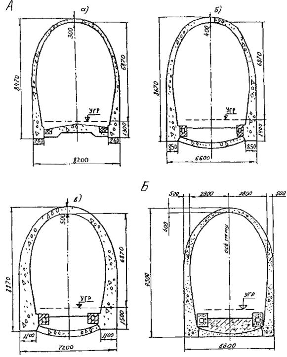
Рис П.1.1, А: а) f=6¸8; б) f=3¸5; в) f=1,5¸3; Б: конструкция обделки однопутного железнодорожного тоннеля для суровых климатических условий
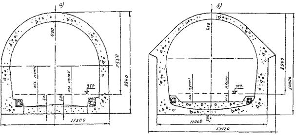
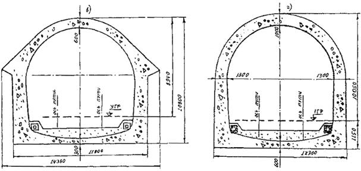
Рис. П.1.2. Конструкции обделок двухпутных железнодорожных тоннелей:
а) для суровых климатических условий: б) f>6; в) f=3-5; г) f=1,5¸3
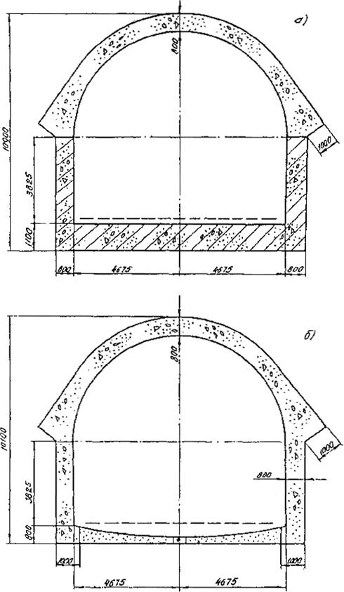
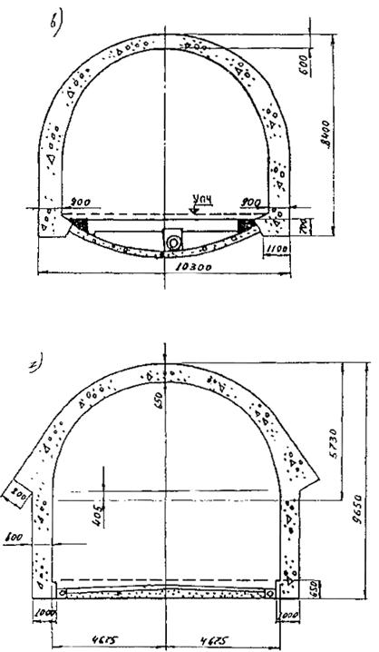
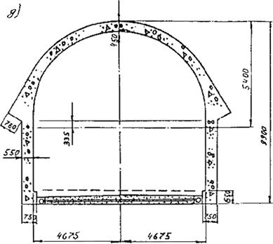
Рис. П.1.3. Конструкции обделок двухполосных автодорожных тоннелей:
а) f=1,5¸3; б) f=1,5¸3; в) f=3¸5; г) f=5¸6; д) f=6¸8
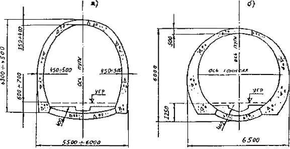
Рис. П.1.4. Конструкции монолитных обделок перегонных тоннелей метрополитенов:
а - для пород крепостью f=3¸5; б - для пород крепостью f=1,5¸3
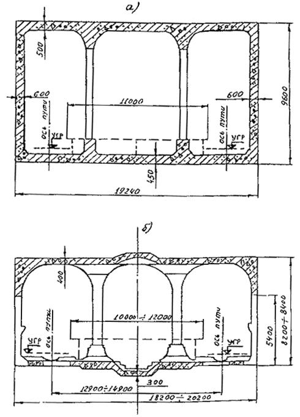
Рис. П.1.5 Конструкции трехсводчатых станций метрополитенов колонного типа:
а) монолитный железобетон; б) комбинированная; в) монолитный бетон; г) монолитный бетон
Примечание: а, б - конструкции станций мелкого заложения; в, г - конструкции станции глубокого заложения.
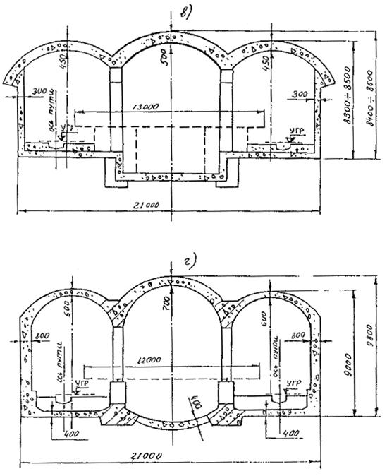
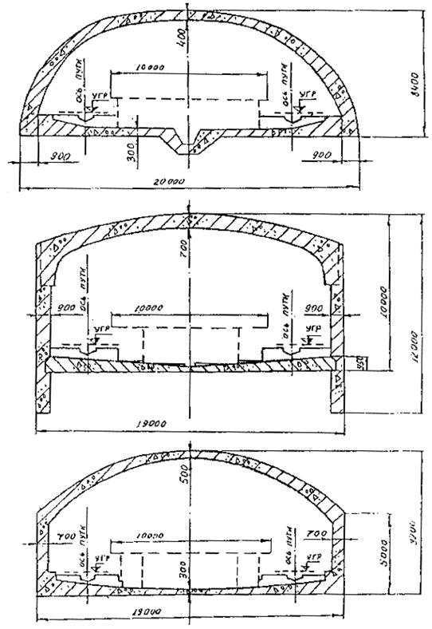
Рис. П.1.6. Конструкции односводчатых станций метрополитенов мелкого заложения из монолитного железобетона
|
Расчетные сопротивления бетона для предельных состоянии первой группы |
Вид бетона |
Значения Rb и Rbt при классе бетона по прочности на сжатие, МПа |
||||||
|
В12,5 |
В15 |
В20 |
В22,5 |
В25 |
В27,5 |
В30 |
||
|
При осевом сжатии Rb |
тяжелый |
- |
8,5 |
11,5 |
12,5 |
14,5 |
15,7 |
17,0 |
|
легкий |
7,5 |
8,5 |
11,5 |
12,5 |
14,5 |
15,7 |
17,0 |
|
|
При осевом растяжении Rbt |
тяжелый |
- |
0,75 |
0,9 |
0,97 |
1,05 |
1,13 |
1,2 |
|
легкий при мелком заполнителе: |
||||||||
|
Плотный |
0,66 |
0,75 |
0,9 |
0,97 |
1,05 |
1,13 |
1,2 |
|
|
пористый |
0,66 |
0,74 |
0,8 |
0,85 |
0,9 |
0,95 |
1,0 |
|
|
Нормативные Rbn, Rbtn и расчетные Rb,ser, Rbt,ser сопротивления бетона для предельных состояний второй группы |
Вид бетона |
Значения Rbn, Rbtn и Rb,ser, Rbt,ser при классе бетона по прочности на сжатие, МПа |
||||||
|
В12,5 |
В15 |
В20 |
В22,5 |
В25 |
В27,5 |
В30 |
||
|
При осевом сжатии Rbn Rb,ser |
тяжелый |
- |
11,0 |
15,0 |
16,7 |
18,5 |
19,2 |
22,0 |
|
легкий |
9,5 |
11,0 |
15,0 |
16,7 |
18,5 |
19,2 |
22,0 |
|
|
При осевом растяжении Rbtn Rbt,ser |
тяжелый |
- |
1,15 |
1,40 |
1,50 |
1,60 |
1,70 |
1,80 |
|
легкий при мелком пористом заполнителе: плотном |
1,0 |
1,15 |
1,40 |
1,50 |
1,60 |
1,70 |
1,80 |
|
|
пористом |
1,0 |
1,10 |
1,20 |
1,27 |
1,35 |
1,42 |
1,50 |
|
|
Вид сопротивления |
Значения Rbt при классе бетона по прочности на растяжение, МПа |
||||
|
В0,8 |
В1,2 |
В1,6 |
В2,0 |
В2,4 |
|
|
Растяжение осевое |
0,62 |
0,93 |
1,25 |
1,55 |
1,85 |
Примечание. Значения Rbt не зависят от вида бетона.
|
Условия работы конструкции |
Проектные марки бетона по морозостойкости при средней температуре воздуха самого холодного месяца |
|
|
-15°С и выше |
ниже -15°С |
|
|
Попеременное замораживание и оттаивание в водонасыщенном состоянии |
200 |
300 |
|
Попеременное замораживание и оттаивание в воздушно-влажном состоянии |
150 |
200 |
|
При отсутствии знакопеременной температуры в тоннеле |
100 |
150 |
|
Бетон |
Марка бетона по средней плотности |
Начальный модуль упругости бетона при сжатии и растяжении ЕbX10-3, МПа при классе бетона по прочности на сжатие |
||||||
|
В12,5 |
В15 |
В20 |
В22,5 |
В25 |
В27,5 |
В30 |
||
|
Тяжелый |
Д2200-Д2500 |
- |
23,0 |
27,0 |
28,5 |
30,0 |
31,2 |
32,5 |
|
Легкий |
Д1600 |
13,2 |
14,0 |
15,5 |
16,0 |
16,5 |
17,0 |
17,5 |
|
Д1700 |
14,0 |
14,7 |
16,2 |
16,8 |
17,5 |
18,0 |
18,5 |
|
|
Д1800 |
14,7 |
15,5 |
17,0 |
17,7 |
18,5 |
19,0 |
19,5 |
|
|
Д1900 |
15,8 |
16,7 |
18,3 |
19,0 |
19,7 |
20,0 |
20,7 |
|
|
Д2000 |
17,0 |
18,0 |
19,5 |
20,2 |
21,0 |
21,5 |
22,0 |
|
А. Подбор состава бетона
Подбор состава бетона следует производить в соответствии с ГОСТ 27006-86.
Целью подбора состава бетона является определение такого соотношения между исходными материалами, при котором гарантируется необходимая прочность, морозостойкость и водонепроницаемость бетона в монолитных конструкциях с учетом технологии изготовления и укладки бетонной смеси, а также экономичности бетона (минимальный расход цемента или минимальная стоимость).
Составы бетонов с пластифицирующими добавками подбирают так же, как и для обычного бетона, а затем проводят пробные замесы и в случае необходимости - корректировку состава.
При использовании воздухововлекающих, а также некоторых пластифицирующих добавок в составе бетонной смеси следует учитывать соответствующее количество вовлеченного воздуха.
Расход воды и объемное содержание песка в смеси заполнителей рекомендуется определять в зависимости от наибольшего размера зерен крупного заполнителя по таблице.
Расход цемента Ц определяется из следующего соотношения:
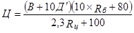
где В - содержание воды, л; Д¢ - количество вовлеченного воздуха, %, устанавливаемое в зависимости от требуемой морозостойкости и водонепроницаемости (в соответствии с ВСН 150-93); Rб и Rц - соответственно проектная прочность бетона в возрасте 28 суток и активность цемента, МПа.
По формуле (2) определяется абсолютный объем заполнителей
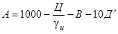
где gц - плотность цемента, г/см3.
Расход песка и щебня устанавливается по формулам:
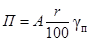
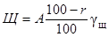
где r - объемное содержание в смеси заполнителей; gп и gщ - соответственно плотность песка и щебня, г/см3.
|
Наибольший размер зерен заполнителя, мм |
Водопотребность бетонной смеси, л/м3 |
Объемное содержание песка в смеси заполнителей, %, при воздухосодержании |
Содержание фракций в крупном заполнителе, %, при размере зерен, мм |
||||
|
2 |
4 |
6 |
5-10 |
10-20 |
20-40 |
||
|
10 |
225 |
40 |
35 |
33 |
100 |
- |
- |
|
20 |
215 |
38 |
34 |
32 |
25-40 |
65-75 |
- |
|
40 |
200 |
36 |
33 |
31 |
15-25 |
20-35 |
40-65 |
Примечания: 1. Таблица составлена для бетонных смесей подвижностью 10-15 см, приготовленных на щебне с водопоглощением до 1,5%, песка с модулем крупности 2 и цементе с нормальной густотой 26-28%.
2. При изменении модуля крупности на ±0,1 объемное содержание песка изменяется соответственно на ±0,5%.
При изменении нормальной густоты цементного теста на ±1% расход воды следует изменить соответственно на ±3-5 л на 1 м3.
При использовании суперпластификаторов водопотребность равноподвижных смесей снижается на 15-25%.
Оптимальная дозировка пластифицирующей добавки выбирается в соответствии с табл. 4 ВСН 150-93 и должна соответствовать возможно меньшему расходу воды на 1 м3 бетонной смеси по сравнению с равно-подвижной смесью, приготовленной без добавок при сохранении прочности бетона в возрасте 28 сут.
Дозировка воздухововлекающей добавки устанавливается в зависимости от требуемого воздухосодержания (см. ВСН 150-93). При этом следует иметь в виду, что воздухосодержание увеличивается с ростом подвижности бетонной смеси, увеличением количества песка в смеси заполнителей и при более интенсивном перемешивании и понижается с увеличением расхода цемента, повышением температуры бетонной смеси, увеличением времени транспортировки и виброукладки бетонной смеси.
Необходимое количество (по массе) дозируемого раствора добавки Рр.д, кг, определяется по формуле
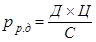
где Д - дозировка добавки, % массы цемента; Ц - расход цемента на 1 м3 бетона, кг; С - концентрация раствора добавки, %.
Если раствор добавки дозируется по объему Vр.д, л, то последний рассчитывается по формуле
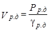
где gр.д - плотность раствора, г/см3.
В случае необходимости сокращения цикла бетонирования и, в частности, времени выстойки монолитного бетона в опалубке, в бетонную смесь вводят микрокремнезем, при применении которого следует учитывать возможное влияние на процессы отвердения, сокращение «жизнеспособности» бетонной смеси - времени (с момента приготовления), в течение которого сохраняются необходимые по технологии формовочные свойства бетонной смеси.
Путем проведения пробных замесов определяют подвижность и воздухосодержание бетонной смеси и в случае необходимости корректируют расход воды, объемное содержание песка и дозировку добавок.
Б. Пример подбора состава бетона
Необходимо подобрать состав бетона класса В25 (30 МПа), морозостойкостью F 200. Бетонная смесь подается в опалубку пневмобетононасосом и должна иметь подвижность 10 см. Для приготовления бетона используются портландцемент марки 400 с плотностью 3,1 г/см3 и нормальной густотой цементного теста 27%, природный песок с модулем крупности 2,2 (плотность породы 2,65 г/см3), гранитный щебень фракции 5-20 (плотность породы 2,57 г/см3).
1. По табл. 1 приложения 1 ВСН 150-93 определяем первоначальную водопотребность бетонной смеси
В1=175 л.
2. По табл. 4 ВСН 150-93 устанавливаем, что при В/Ц 0,41-0,50 и наибольшей крупности щебня 20 мм воздухосодержание бетонной смеси Д для получения морозостойких бетонов (F до 300) должно составлять 2-4%.
3. По формуле (1) рассчитываем расход цемента
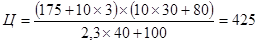
4. Определяем водоцементное отношение
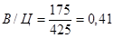
Это В/Ц соответствует выбранному по п. 2 и не требует корректировки водопотребности согласно примечанию к таблице.
5. По формуле (2) рассчитываем абсолютный объем заполнителей
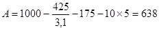
7. По табл. 2 приложения 1 ВСН 150-93 находим объемное содержание песка в смеси заполнителей
r1=33%.
После корректировки по примечанию 2 к таблице: rп=43%.
8. По формулам (3) и (4) вычисляем расходы песка и щебня:
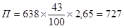
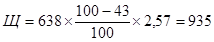
9. При расходе комплексной добавки (ЛСТМ-2+СНВ) соответственно 0,2 и 0,005% от массы цемента их количество в пересчете на сухой продукт составит 1,05 и 0,026 кг.
При использовании ЛСТМ-2 и СНВ в виде растворов соответственно 10- и 5- % концентрации их объем составит согласно формулам (5) и (6):
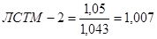
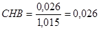
|
Добавка |
Плотность растворов добавок, кг/м3 при концентрации % |
|||||||||
|
5 |
7 |
10 |
15 |
20 |
25 |
30 |
35 |
40 |
45 |
|
|
С-3 |
1020 |
1030 |
1045 |
1069 |
1090 |
1116 |
1148 |
1180 |
1205 |
- |
|
ЛСТМ-2 |
1021 |
1029 |
1043 |
1067 |
1091 |
1117 |
- |
- |
- |
- |
|
СДБ |
1021 |
1029 |
1043 |
1068 |
1091 |
1117 |
1144 |
1173 |
1202 |
1266 |
|
СНВ |
1015 |
1021 |
1030 |
1045 |
1060 |
1075 |
1089 |
1105 |
1120 |
- |
|
СДО |
1008 |
1012 |
1017 |
1025 |
1034 |
1043 |
1052 |
1060 |
1009 |
- |
|
УПБ |
1019 |
1028 |
1040 |
1061 |
1083 |
1106 |
1129 |
1154 |
1179 |
1232 |
|
ЩСПК |
1031 |
1046 |
1066 |
1099 |
1132 |
1165 |
1198 |
- |
- |
- |
|
АЦФ-3 |
1020 |
1026 |
1033 |
1058 |
1088 |
- |
- |
- |
- |
- |
Таблица П.6.2
Таблица перехода количества добавки «Альфа» на жидкое вещество с сухого в зависимости от концентрации (содержания сухого остатка в добавке)
|
Количество добавки «Альфа, % от массы цемента |
Количество добавки «Альфа» на сухое вещество, % от массы цемента, при концентрации (содержании сухого остатка), % |
|||
|
4 |
5 |
6 |
7 |
|
|
0,25 |
0,0100 |
0,0125 |
0,0150 |
0,0175 |
|
0,50 |
0,020 |
0,025 |
0,030 |
0,035 |
|
0,75 |
0,030 |
0,0375 |
0,0450 |
0,0525 |
|
1,00 |
0,040 |
0,050 |
0,060 |
0,070 |
|
2,00 |
0,080 |
0,100 |
0,120 |
0,140 |
|
4,00 |
0,160 |
0,200 |
0,240 |
0,280 |
|
6,00 |
0,240 |
0,300 |
0,360 |
0,420 |
|
8,00 |
0,320 |
0,400 |
0,480 |
0,560 |
|
10,00 |
0,40 |
0,50 |
0,60 |
0,70 |
|
15,00 |
0,60 |
0,75 |
0,90 |
1,05 |
|
20,00 |
0,80 |
1,00 |
1,20 |
1,40 |
|
25,00 |
1,00 |
1,25 |
1,50 |
1,75 |
|
30,00 |
1,20 |
1,50 |
1,80 |
2,10 |
|
35,00 |
1,40 |
1,75 |
2,10 |
2,45 |
|
50,00 |
2,00 |
2,5 |
3,0 |
4,0 |
|
75,00 |
3,00 |
3,75 |
4,50 |
5,25 |
|
100,00 |
4,00 |
5,0 |
6,0 |
7,0 |
Техническая характеристика
Вид станционный, дискретного действия, двухкомпонентный
Дозируемые продукты жидкие
Химические добавки растворы солей, суспензии, эмульсии поверхностно-активных веществ
Концентрация растворов, % 0,5-20
Вязкость близка к вязкости воды
Плотность, г/см3 1-1,3
Пределы дозирования, кг 1,5-30
Длительность цикла дозирования, с не более 45
Объем грузоприемного устройства, л 50
Цена деления шкалы циферблатного указателя, кг 0,1
Класс точности 1,5
Управление дозатором электропневматическое
Питание от сети переменного тока напряжением 220 В, частотой 50 Гц
Потребляемая мощность, кВт 0,5
Питание воздухом от пневмосети давлением 0,4-0,6 МПа
Расход воздуха (по всасыванию), мг не более 0,5
Габаритные размеры, см 1375Х1300Х1500
Масса дозатора, кг 280
Количество задаваемых доз:
исполнение 1 до трех
исполнение 2 до шести
Требуемое исполнение указывается заказчиком, при отсутствии указания поставляется исполнение 1.
Дозатор должен работать и комплекте с весовыми автоматическими дозаторами для остальных составляющих бетонной смеси. Управление осуществляется с пульта оператора БСУ.
Для дозирования водных растворов химических добавок в бетонную смесь используется установка, разработанная ВНИИ транспортного строительства, на базе серийно выпускаемого дозировочного агрегата НД.
Установка обеспечивает объемное напорное дозирование центральных и слабоагрессивных жидкостей и суспензий с концентрацией твердой неабразивной фазы до 10% по массе и кинематической вязкостью до 8Х104 м2/ceк.
Рис. П.8. Принципиальная схема дозирующего устройства:
1 - пульт управления с цифровым индикатором и галетными переключателями; 2 - дозировочный агрегат; 3 - датчик качков; 4 - всасывающий шланг; 5 - емкость с химической добавкой; 6 - нагнетательный шланг; 7 - бетономеситель
Дозаторы осуществляют автоматическое отмеривание любых заданных доз в диапазоне от 0,5 до 20 л и их подачу в бетоносмеситель При этом отпадает необходимость предварительной подачи и устройства расходных баков в бункерном отделении БСУ, т.к. функции перекачки и дозирования раствора сосредоточены в одном блоке.
Погрешность дозирования не превышает норм, предусмотренных ГОСТ 7473-85.
Управление работой устройства выведено на пульт оператора БСУ.
Установка отличается простотой и надежностью в эксплуатации, может использоваться на бетонных заводах как периодического, так и непрерывного действия с рабочей производительностью до 40 м3/час.
Техническая характеристика
Потребляемая мощность, кВт 22
Масса, кг 150
Габаритные размеры, мм
длина 900
ширина 310
высота 800
высота подачи раствора, м до 50
Пульт управления 1 (рис П.8) расположен в кабине оператора БСУ. Необходимая доза добавки останавливается согласно заданию двумя галетными переключателями Г1 и Г2. Для включения дозирующего агрегата 2 нажимается пусковая кнопка. В процессе работы установки с помощью датчика 3 на индикаторных лампах высвечиваются цифры, показывающие объем отдозированной жидкости, которая одновременно перекачивается из приготовительной емкости 5 всасывающим 4 и нагнетательным 6 шлангами в бетоносмеситель 7. Когда цифры на индикаторных лампах достигнет величины заданной дозы, остановка прекращает работу автоматически. Затем аппарат автоматически устанавливается в исходное положение, на индикаторных лампах высвечиваются нули установка готова к следующему дозированию.
Время работы установки связано с циклом дозирования компонентов и приготовления бетонной смеси. Затраты времени на подачу добавки из расходной емкости в бетоносмеситель минимальны. В частности, для отмеривания и перекачки 10 л раствора добавки требуется не более 10-15 секунд.
Продолжительность перемешивания должна определяться строительной лабораторией опытным путем.
За начало перемешивания принимается момент окончания загрузки всех материалов в смеситель, за окончание перемешивания - начало выгрузки из него смеси.
Критерием качества перемешивания бетонной смеси рекомендуется считать величину коэффициента вариации прочности в серии контрольных образцов-кубов, приготовленных из одного замеса. Опытное определение продолжительности перемешивания в производственных бетоносмесителях следует осуществлять, удостоверившись, что коэффициент вариации прочности образцов-близнецов, приготовленных в лаборатории, не превышает 4-5%.
Для установления необходимой продолжительности перемешивания рекомендуется опытным путем определить зависимость V(f), где V - коэффициент вариации образцов-близнецов, изготовленных из проб одного замеса; t - продолжительность перемешивания.
Достаточной является продолжительность перемешивания, соответствующая выполаживанию кривой на графике (рис. П.9).
Для построения зависимости V=f(t) готовят несколько замесов бетонной смеси с различной продолжительностью перемешивания, например 45, 60, 75, 90, 120 с. Каждой из них должны соответствовать три опытных замеса.
Минимальную продолжительность перемешивания рекомендуется принимать для бетоносмесителей принудительного перемешивания 45 с, для гравитационных - 60 с.
Рис. П.9. График зависимости коэффициента вариации прочности V от продолжительности перемешивания t
Пробы для изготовления контрольных образцов-кубов следует отбирать сразу после перемешивания. Пробы должны отбираться равномерно по мере выгрузки замеса из всех его частей. Для изготовления образцов нужно отобрать не менее 10 проб, а образцов-кубов из одного замеса - не менее 20.
Изготовление и испытание образцов следует производить по ГОСТ 10180-78.
Для ускорения получения результатов рекомендуется испытывать образцы на прочность после 7 суток хранения в нормально-влажных условиях или после тепловлажностной обработки в лабораторной камере.
В последнем случае необходимо соблюдать одинаковый режим обработки для всех образцов, а испытание проводить не ранее чем через 4 ч после окончания тепловлажностной обработки.
Коэффициент вариации прочности образцов бетона, приготовленных из проб, соответствующих каждой продолжительности перемешивания, принимается равным среднему из трех, полученных в каждом опытном замесе.
При отсутствии данных опытной проверки наименьшая продолжительность перемешивания в смесителях циклического действия принимается по таблице.
|
Объем готового замеса смесителя, л |
Продолжительность перемешивания, с, в смесителях |
|||
|
гравитационных |
принудительного перемешивания |
|||
|
смеси с осадкой конуса, см |
||||
|
менее 2 |
2-5 |
более 6 |
||
|
500 и менее |
100 |
75 |
60 |
60 |
|
Более 500 |
150 |
120 |
90 |
60 |
Рекомендуется периодически проверять качество перемешивания, зависящее от износа и правильности установки лопастей бетоносмесителя. Подобная проверка заключается в сравнении содержания крупного заполнителя в пробах, отобранных в начале, середине и конце выгружаемого замеса.
Количество крупного заполнителя в пробе определяется мокрым рассевом на сите с отверстиями 5 мм. Разность в содержании крупного заполнителя в трех пробах не должна превышать 5%.
|
Марки бетоносмесительных установок |
Производительность, м3/ч |
Кол-во фракций заполнителей |
Максимальная крупность заполнителя, мм |
Установленная мощность, кВт |
Масса, т |
Тип |
Завод-изготовитель |
|
СБ-140А |
До 12 |
3 |
70 |
27,1 |
9 |
Цикличная, мобильная, зимняя до минус 15°С |
Славянский завод Минстройдормаша |
|
СБ-185 |
22,5 |
4 |
70 |
36 |
17,5 |
Цикличная, инвентарная, летняя |
Тюменский завод Минстройдормаша |
|
СБ-176 |
20 |
4 |
70 |
50 |
31,5 |
Цикличная, блочно-перебазируемая зимняя -20°С |
Тюменский завод Минстройдормаша |
|
СБ-167 |
60 |
4 |
70 |
215 |
100 |
Цикличная, блочно-перебазируемая, зимняя -30 С |
Славянский завод Минстройдормаша |
|
СБ-164 |
120 |
3 |
120 |
300 |
180 |
Цикличная, мобильная, летняя |
Славянский завод Минстройдормаша |
|
СБ-171 СБ-145: |
60 |
4 |
70 |
110 |
95 |
Цикличная, зимняя, до -15°С |
Славянский завод Минстройдормаша |
|
2 |
40 |
4 |
70 |
87 |
48 |
Цикличная, блочно-перебазируемая до –30°C |
Славянский завод Минстройдормаша |
|
3 |
40 |
4 |
70 |
90 |
50 |
Цикличная, блочно-перебазируемая, зимняя до -30°С |
Славянский завод Минстройдормаша |
|
СБ-109Б |
135 |
3 |
70 |
290 |
136 |
Непрерывного действия, мобильная, летняя |
Славянский завод Минстройдормаша |
|
БСУ-1 (М-1) |
52 |
4 |
70 |
125 |
50 |
Цикличная, мобильная, летняя |
Минуралсибстрой |
|
5817 (Н-500) |
32 |
4 |
70 |
50 |
27,6 |
Цикличная, перебазируемая, летняя |
Рижский ремонтно-механический завод Минтрансстроя по кооперации с германской фирмой |
|
АБСУ-750 |
15 |
4 |
70 |
53 |
32 |
Цикличная, зимняя до -15°С |
Тульский ремонтно-механический завод Минтрансстроя |
|
СБ-75А |
30 |
3 |
40 |
37,5 |
21,5 |
Непрерывного действия, летняя |
Славянский завод Минстройдормаша |
|
АБСУ-15 |
15 |
5 |
70 |
60 |
81 |
Цикличная, зимняя до минус 15°С |
Тульский ремонтно-механический завод Минстройдормаша |
Примечания: 1. Бетоносмесительная установка СБ-145-3 выпускается с микропроцессорной системой управления и дозаторами с тензометрическим способом взвешивания.
2. СБ-167 оборудована двумя принудительными смесителями роторного типа СБ-138А.
3. СБ-171 оборудована принудительным смесителем роторного типа (объем готового замеса 1250 л) и дозаторами с тензометрическим способом взвешивания (см. приложение 6).
4. СБ-164 выпускается в блочно-мобильном исполнении с гравитационным бетоносмесителем (объем готового замеса 5000 л), оборудована управляющей вычислительной системой.
5. СБ-109Б выпускается с гравитационным смесителем непрерывного действии в блочном исполнении.
6. БСУ-1 оборудована бункерно-дозировочно-смесительным блоком, паропроизводящим контейнером, двумя силосами для хранения цемента.
7. Установка 5817 типа Н-500 партерного типа с секторным складом заполнителей, оборудованным стреловым скрепером, смесительно-дозировочным узлом и двумя силосами цемента.
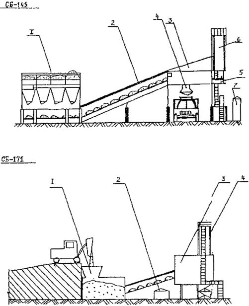
Рис. П.10. Общие виды бетоносмесительных установок:
СБ-145 – 1 - блок бункеров заполнителей; 2 - галерея с ленточным конвейером; 3 - смесительно-дозировочный блок; 4 - воронка; 5 - блок химических добавок; 6 - склад цемента; 7 - блок управления; СБ-171 – 1 - блок заполнителей; 2 - блок управления; 3 - смесительно-дозировочный блок; 4 - расходные бункера цемента.
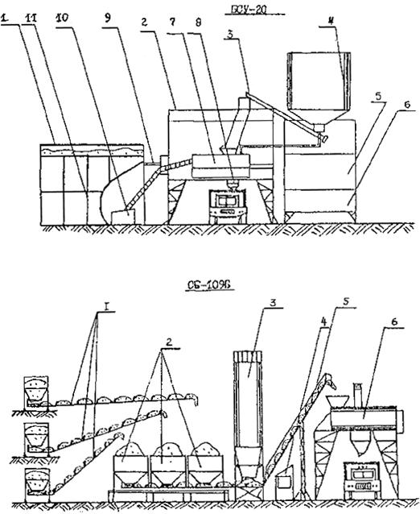
Рис. П.10. (продолжение):
БСУ-20 – 1 - блок заполнителей; 2 - блок смесительный; 3 - конвейер; 4 - склад цемента; 5 - блок управления; 6 - блок химической добавки; 7 - бетоносмеситель; 8 - загрузочная воронка; 9 - система технологического водоснабжения; 10 - скип; 11 - блок водоснабжения и дозаторный; СБ-109Б – 1 – конвейер; 2 - бункера заполнителей; 3 - блок дозирования цемента; 4 - блок управления: 5 - галерея с ленточным конвейером; 6 - смесительный блок.
|
Показатели |
Марки автобетоносмесителей |
|||||||||
|
1036 Б (СБ-69Б) |
СБ-92 |
СБ-92-la |
СБ-92В-1 |
СБ-159А* |
АБС-6* |
СБ-127 |
АБС-03 |
СБ-130* |
АБС-4Т-12*** |
|
|
Базовый автомобиль |
МА3-503 |
КрАЗ-258 |
КамАЗ-5511 |
КамАЗ-5511 |
КамАЗ-5511 |
КрАЗ-250 |
КрАЗ-6505 |
КамАЗ-53213 |
КамАЗ-54112** |
КрАЗ-250 |
|
Объем готового замеса, м3 |
2,6 |
4 |
4 |
4,5 |
5 |
6 |
6 |
6 |
10 |
4 |
|
Геометрический объем смесительного барабана, м3 |
6,1 |
6,1 |
6,1 |
6,1 |
8 |
12 |
12 |
12 |
14 |
6,1 |
|
Вместимость бака для воды, л |
630 |
850 |
850 |
750 |
400 |
400 |
400 |
400 |
1500 |
400 |
|
Мощность бетоносмесителя, кВт |
30 |
37 |
40 |
37 |
59 |
58 |
56 |
54 |
55 |
58**** |
|
Частота вращения барабана, об/мин |
8...12 |
6...12 |
6...12 |
6...12 |
8...20 |
8...14 |
8...12 |
8...14 |
6...12 |
8…14 |
|
Высота загрузки, м |
3,4 |
3,5 |
3,3 |
3,3 |
3,4 |
3,7 |
3,4 |
3,5 |
3,7 |
3,7 |
|
Максимальная скорость движения по автодорогам, км/ч |
60 |
60 |
60 |
60 |
60 |
90 |
60 |
60 |
60 |
90 |
|
Габаритные размеры, м: |
||||||||||
|
длина |
6,63 |
8,03 |
7,50 |
7,35 |
8,00 |
8,60 |
8,80 |
9,00 |
10,0 |
8,60 |
|
ширина |
2,63 |
2,65 |
2,50 |
2,50 |
2,50 |
2,65 |
2,65 |
2,50 |
2,5 |
2,65 |
|
высота |
3,42 |
3,52 |
3,45 |
3,35 |
3,60 |
3,60 |
3,65 |
3,60 |
3,7 |
3,60 |
|
Масса автобетоносмесителя, т: |
||||||||||
|
порожнего |
9,1 |
12,3 |
10,2 |
10,4 |
9,8 |
13,3 |
14,0 |
10,2 |
10,7 |
12,3 |
|
загруженного |
15,3 |
21,9 |
19,2 |
19,2 |
19,2 |
22,9 |
22,5 |
22,0 |
36,0 |
21,9 |
|
* Бетоносмеситель оборудован обогревом для работы при температуре минус 30°С. ** Седельный тягач с полуприцепом. *** Автобетоносмеситель оборудован транспортером для подачи бетонной смеси к месту укладки. **** Суммарная мощность смесителя и транспортера. |
||||||||||
|
Показатели |
Шифр опалубки |
||||||||||||
|
ОПС-16 |
ОПР-1 |
МО-18 |
ОПС-62 |
Сага-Когио (Япония) |
ОПК-28 |
МО-21 |
ОПВ.63 |
«Вортингтон» (Италия) |
ОСС-1 |
OБC-1 |
|||
|
с полущитом ППШ-1 |
самостоятельно |
||||||||||||
|
Назначение опалубки по виду выработки |
разведочно-транспортные штольни |
однопутный ж.-д. тоннель, полное сечение |
однопутный ж.-д. тоннель, свод |
двухпутный ж.-д. тоннель, полное сечение |
двухпутный ж.-д. тоннель, свод |
односводчатые станции метрополитена открытого способа |
|||||||
|
Тип опалубки |
самоходная |
самоходная |
сборно-разборная |
секционная |
самоходная |
самоходная |
сборно-разборная |
переставная |
самоходная |
самоходная |
сборно-разборная |
||
|
Число секции, шт. |
3 |
3 |
3 |
3 |
8 |
2 |
9 |
9 |
9 |
3 |
1 |
1 |
|
|
Ширина секции, м |
3 |
3 |
1 |
4,5 |
1,5 |
1 |
1 |
1 |
1 |
3 |
6 |
8 |
|
|
Размер заходки, м |
9 |
9 |
9 |
13,5 |
12 |
9 |
9 |
1; 2 или 3 |
9 |
9 |
6 |
6 |
|
|
Габаритные размеры опалубки, м: |
|||||||||||||
|
Длина |
15,3 |
15,7 |
3,0 |
28,0 |
20,5 |
11,3 |
18,0 |
4,5 |
11,5 |
9,0 |
6,6 |
8,2 |
|
|
Ширина |
5,3 |
4,7 |
5,6 |
5,5; 6,0; 6,3 |
5,6 |
5,6 |
10,6 |
10,9 |
10,9 |
11,2 |
5,1 |
17,8 |
|
|
Высота |
3,4 |
4,1 |
7,6 |
9,0; 9,2; 9,6 |
8,2 |
4,7 |
5,7 |
5,6 |
5,6 |
5,4 |
5,4 |
7,25 |
|
|
Внутренний габарит тележки, портала, м: |
|||||||||||||
|
Ширина |
3,7 |
2,8 |
- |
3,4 |
3,2 |
2,8 |
2,6 |
3,7 |
3,7 |
3,6 |
- |
- |
|
|
Высота |
1,8 |
2,8 |
- |
3,4 |
3,2 |
3,5 |
2,8 |
3,6 |
3,6 |
3,7 |
- |
- |
|
|
Ширина колец (в осях рельсов), м |
4,02 |
1,02 |
- |
3,7 |
3,8 |
- |
4,4 |
4,2 |
4,2 |
4,5 |
1,8 |
11,3 |
|
|
Установленная мощность, кВт |
25 |
15 |
- |
52 |
10,3 |
16,5 |
52 |
27,5 |
55 |
106 |
29 |
10 |
|
|
Масса, т |
23 |
38,8 |
- |
160,6 |
100 |
45,9 |
174 |
94,8 |
108,1 |
110 |
22,7 |
- |
|
1. Опалубка самоходная ОПС-16 (СКТБ ГТМ)
Опалубка самоходная ОПС-16 (рис. П.12.1) предназначена для механизации возведения монолитной обделки сводовой части транспортных штолен при проходке двумя уступами 9-метровыми заходками. Опалубка состоит из трех секций 1, каждая из которых установлена на самостоятельной тележке 5. В механизм отрыва опалубки от бетона входят гидроцилиндры 4, действующие через систему рычагов 3, 7. Основные сегменты 6 дополнены инвентарной вставкой для корректировки размера свода согласно проекту. В комплект опалубки входит тележка с секциями бетоновода 2 и секции воздуховода. Опалубка оборудована центральным гидро- и электропультом.
Бетон по бетоноводу подают через передний торец в заопалубочное пространство.
Рис. П.12.1. Опалубка самоходная ОПС-16:
1 - секции; 2 - тележка для бетоновода; 3 - рычат; 4 - гидроцилиндры отрыва; 5 - тележка секции; 6 - створка; 7 - трехгранные рычаги; 8 - вставка; 9 - короб воздуховода.
Габаритные размеры опалубки: длина - 15,3 м; ширина - 5,3 м; высота - 3,4 м.
Внутренние размеры портала обеспечивают проход транспорта проходческого комплекса. Ширина колеи тележек по осям рельсов - 4,02 м, масса опалубки - 23 т.
2. Самоходная опалубка ОПР-1 (СКТБ ГТМ)
Опалубка предназначена для возведения монолитной бетонной обделки транспортной штольни и других тоннелей на полное сечение.
Опалубка состоит (рис. П.12.2) из трех секций 1, опорных балок 3, механизма отрыва 5 и передвижения, подвижных подмостей 2, электро- и гидросистем.
Собранная и отрегулированная, полностью состыкованная опалубка устанавливается по маркшейдерским замерам в выработке. Через люки и патрубки 4 для подвода бетона производят бетонирование. Отрыв производят по секциям эксцентриковым механизмом. Сначала поднимается и отрывается основание секции и опалубка устанавливается на направляющие опорных балок. Двумя межсекционными цилиндрами секция № 1 перемешается на 1,5 м, затем - вторая и третья.
Последовательным сдвигом вся опалубка перемещается на 9 м, и цикл повторяется.
Рис П.12.2. Самоходная опалубка ОПР-1:
1 - секция, 2 – подмости; 3 – балка; 4 - патрубок бетоновода; 5 - механизм отрыва
3. Сегментная сборно-разборная опалубка МО-18 (СКТБ ММЗ ГТМ)
Опалубка МО-18 предназначена для возведения отдельных участков небольшой протяженности - до 500 м монолитной обделки однопутных железнодорожных тоннелей. Она состоит из (рис П.12.3) отдельных стальных сегментов, сболчиваемых в секцию шириной в один метр. Секции также соединяются между собой болтами. Сборка и разборка элементов ведется при помощи рычажного механизма, установленного на самоходной портальной тележке, передвигающейся по подошве выработки и по направляющим, установленным на кронштейнах нижних закрепленных сегментов опалубки.
В сегментах устраивают проемы («окна») для укладки бетона в заопалубочное пространство бетоноводами.
Габаритные размеры собранных секций опалубки соответствуют типовому сечению однопутного железнодорожного тоннеля: высота - 7,63 м, ширина - 5,06 м, длина секции – 1 м. Размер заходки принимают от 3 до 9 м в зависимости от условий проходки и ведения бетонных работ.
Рис. П.12.3. Секция сегментной сборно-разборной опалубки МО-18:
1 - секция; 2 - сегмент; 3 - направляющие; 4 - проемы
4. Самоходная опалубка «Сага-Когно» (Япония)
Опалубка фирмы «Сага-Когно» предназначена для механизации возведения монолитной бетонной обделки однопутного железнодорожного тоннеля, разрабатываемого на полное сечение. Опалубка (рис. П.12.4) опирается на тележку 1, представляющую собой каркасную металлическую конструкцию с верхним и нижним порталами. Опалубка состоит из одного верхнего 3, двух боковых сегментов 4 и двух нижних 6. Оборудование опалубки состоит из гидродомкратов 2, гидроцилиндров 5 для установки и отрыва сегментов от затвердевшего бетона, пульта управления.
Общая длина опалубки 20,5 м обеспечивает заходку в 20 м. Ширина и высота опалубки соответственно равны 5,6 и 8,2 м. Ширина колеи тележки 3800 мм. Габариты портала тележки в свету для пропуска транспорта: ширина 3,3 м, высота - 3,2 м. Масса опалубки - 100 т. Мощность пневмодвигателя перемещения опалубки - 10,3 кВт.
Рис. П.12.4. Самоходная металлическая опалубка «Сага-Когно»:
1 - тележка; 2 – гидродомкрат; 3 - верхняя секция; 4 - боковая секция; 5 - гидроцилиндры; 6 - нижняя секция
5. Опалубка самоходная ОПК-28 (СКТБ ГТМ)
Опалубка самоходная ОПК-28 (рис. П.12.5) предназначена для механизации возведения монолитной бетонной обделки свода однопутного железнодорожного тоннеля.
Опалубка состоит из двух секций 1. Механизм отрыва состоит из верхних и нижних гидроцилиндров отрыва 2. Перемещение каждой секции осуществляется отдельно с помощью гидроцилиндров 3. Внутренние габариты опалубки обеспечивают проход самосвальных поездов на базе МоАЗ-64011. В рабочем состоянии секции опалубки состыкованы.
Размер заходки - 9 м, габаритные размеры опалубки: длина - 11,3, ширина - 5,6, высота - 4,7 м; масса опалубки - 45,9 т.
Рис. П.12.5. Опалубка самоходная ОПК-28:
1 - секция; 2 - гидроцилиндры привода отрыва; 3 - гидроцилиндры передвижки секции
6. Опалубка переставная ОПВ-65 (СКТБ ГТМ)
Опалубка предназначена для возведения монолитной железобетонной обделки свода двухпутного железнодорожного и автомобильного тоннеля как в комплекте с полущитом ППШ-1 (в слабых грунтах), так и обособленно (в устойчивых грунтах).
Опалубка состоит (рис. П.12.6) из комплекта секции 1, перестановщиков 2, снабженных гидроцилиндрами 3. Опалубка оснащена гидро- и электрооборудованием.
Работа опалубки в комплексе с полущитом. Перестановщик подается в зону, где ранее уложенный бетон набрал заданную прочность.
Гидроцилиндрами, закрепленными на секции, производится отрыв и укладка опалубки на перестановщик, который перекатывается на очередную захватку бетонирования, расположенную под защитой шандор полушита. Там секция фиксируется в проектном положении, соединяется с ранее установленными секциями и отсоединяется от перестановщика. Начинается новый цикл бетонирования.
При отсутствии щита комплект секции укладывается на два соединенных между собой перестановщика, образуя таким путем самоходную опалубку, которая позволяет вести бетонирование с длиной захватки 9 м.
Рис. П.12.6. Опалубка переставная секционная ОПВ-65:
1 – секция; 2 - перестановщик; 3 - гидроцилиндр
Техническая характеристика
Число секций, шт 9
Заходка в комплексе со щитом, м 1, 2 или 3
Заходка в комплексе без щита, м 9
Скорость перемещения, м/мин 4,8
Габаритные размеры опалубки, м:
длина в комплексе:
со щитом 4,5
без щита 11,5
ширина 10,9
высота 5,6
Внутренний габарит портала перестановщика:
ширина, м 3,7
высота, м 3,6
ширина колеи, мм 4200
Установленная мощность, кВт:
в комплексе со щитом 27,5
без шита 55
Масса, т:
в комплексе 94,8
без щита 108,1
7. Самоходная опалубка «Вортингтон» (Италия)
Самоходная сборно-разборная опалубка фирмы «Вортингтон» (Италия) предназначена для механизации возведения монолитной бетонной обделки сводовой части двухпутных железнодорожных тоннелей (рис. П.12.7). Опалубка может быть использована для возведения монолитной обделки и автодорожных двухполосных тоннелей.
Опалубка состоит из тележки 5, оборудованной пневмодвигателем, секций, составляемых из нижнего 2, среднего 3 и верхнего (добавочного) сегмента 4. Последний представляет собой дополнительную вставку для увеличения внутреннего радиуса обделки на 550 мм.
Секции и сегменты соединяют на болтах, отрыв сегментов от затвердевшего бетона осуществляют боковыми гидроцилиндрами 1.
Опалубка выставляется на проектные отметки вертикальными гидроцилиндрами тележки и анкерами 7 с использованием предварительно забетонированных участков крепи 8.
Полная длина собранных секций опалубки - 9 м. Минимальный радиус кривой, на которой может работать опалубка - 600 м. Габарит портала тележки в свету для пропуска транспорта: ширина - 3,6 м, высота - 3,7 м. Масса опалубки - 110 т.
Рис. П. 12.7. Самоходная сборно-разборная опалубка «Вортингтон»:
1 - гидроцилиндр; 2 - нижний сегмент; 3 - средний сегмент: 4 - верхний сегмент; 5 - тележка; 6 - воздуховод; 7 - анкеровка; 8 - элемент крепи
8. Опалубка станционная самоходная ОСС-1 (СКТБ ГТМ)
Опалубка самоходная станционная ОСС-1 предназначена для механизации возведения монолитных железобетонных стен односводчатых станций метрополитенов при открытом способе производства работ. Опалубка состоит (рис. П.12.8) из наружного 4 и внутреннего 3 бортов, смонтированных на платформе 1. Оборудование опалубки составляет гидросистема, питающая гидроцилиндры передвижения 2 и установки или отрыва 5 внутреннего борта, и электросетью. Наружный борт устанавливается винтовыми домкратами 7.
В пространство между щитами устанавливается арматурный каркас. Бетонирование ведут послойно без перерыва в пределах захватки с уплотнением глубинными вибраторами.
Размер заходки - 6 м, габаритные размеры опалубки с надстройкой: длина - 6,6, высота - 5,1, ширина - 5,1 м; толщина возводимой стены - до 0,9 м; масса опалубки - 22,7 т.
Рис. П.12.8. Опалубка станционная самоходная ОСС-1:
1 - платформа; 2 - гидроцилиндр передвижения; 3 - внутренний борт; 4 - наружный борт; 5 - гидроцилиндр отрыва; 6 - верхняя площадка; 7 - винтовой домкрат
9. Опалубка сборно-разборная самоходная ОБС-1 (СКТБ ГТМ)
Опалубка предназначена для бетонирования свода односводчатых станций метрополитенов при открытом способе производства работ (рис. П.12.9), Она служит основанием и шаблоном для монтажа арматурных каркасов и в качестве несущей конструкции бетона свода.
Опалубка состоит из несущей фермы 1, рамы 2, стяжек 3 для регулировки и установки опалубки, рабочих площадок 4, гидравлического механизма передвижения 5, пульта управления 6, домкратов 7, воспринимающих нагрузку уложенного бетона, гидроцилиндров подъема 8 и складывания 9 опалубки, винтовых опор 10, воспринимающих нагрузку от уложенного бетона в местах сопряжения со стенами, гидрооборудования 11 и электрооборудования 12.
Рис. П.12.9. Самоходная сборно-разборная опалубка ОБС-1:
1 - ферма; 2 – рама; 3 - стяжки; 4 – рабочие площадки; 5 - механизм передвижки гидравлический; 6 - пульт управления; 7 – винтовой домкрат; 8 - гидроцилиндр подъема; 9 - гидроцилиндр складывания; 10 - винтовая опора; 11 - гидрооборудование; 12 - электрооборудование
Техническая характеристика
Гидроцилиндры подъема, шт. - 4; рабочее давление, МПа - 10
Усилие прямого хода, Н - 122000; ход, мм - 400
Гидроцилиндры передвижения, шт. - 2; рабочее давление, МПа - 5
Усилие прямого хода, Н - 325000; ход, мм - 2000
Гидроцилиндры отрыва фермы, шт. - 2; рабочее давление, МПа - 5
Усилие прямого хода, Н - 325000
Винтовые домкраты, шт. - 4
Скорость движения опалубки, м/с - 0,03
Установленная мощность, кВт - 10
Техническая производительность, м/мес - 35
Габаритные размеры, м:
Длина - 8,2; ширина - 17,8; высота - 7,25
Размер заходки, м - 6
1. Пневмобетононагнетатель ПБН-3,3 (СКТБ ГТМ)
Пневмобетононагнетатель предназначен для приема, перемешивания и нагнетания бетонной смеси к месту укладки. Он состоит из цистерны, размещенной на платформе на рельсовом ходу шириной колеи 600 мм, загрузочного бункера, лопастного смесителя, разгрузочного устройства, пневмосистемы и электрооборудования. Лопастной смеситель работает при движении через привод от тележки и на стоянке от электродвигателя. Пневмосистема работает от магистрали сжатого воздуха. Разгрузочное отверстие оборудовано затвором на период транспортирования и соплом для равномерной подачи смеси под давлением.
Ширина колеи тележки нагнетателя может быть изменена путем перестановки кронштейнов и осей, входящих в комплект нагнетателя.
При диаметре бетоновода 150 мм и рабочем давлении 0,6 МПа подача смеси может быть осуществлена на расстояние по горизонтали до 160 м, по вертикали - до 15 м.
Таблица П.13.1
Технические характеристики пневмобетононагнетателей, применяемых при возведении монолитных тоннельных обделок
|
Показатели |
Марка пневмобетононагнетателей |
||||||||||
|
ПБН-3,3 |
ПБН-3,2 |
ПБН-3 |
SKC-30T |
SKC-30 |
ПБН-1,5 |
ПБН-1 |
БП-0,7 |
ПБН-0,5 |
ПБУ-5** |
ПН-0,5 |
|
|
Объем цистерны, м3 |
3 |
3 |
3 |
3 |
3 |
1,5 |
1,0 |
0,7 |
0,5 |
0,5 |
0,5 |
|
Дальность нагнетания, м: |
|||||||||||
|
по горизонтали |
160 |
160 |
160 |
150 |
150 |
160 |
150 |
160 |
200 |
150 |
150 |
|
по вертикали |
15 |
15 |
15 |
10 |
10 |
15 |
15 |
15 |
35 |
15 |
20 |
|
Диаметр бетоновода, мм |
150 |
150 |
150 |
150 |
150 |
150 |
150 |
150 |
150 |
150 |
150 |
|
Рабочее давление, МПа |
0,6 |
0,6 |
0,6 |
0,7 |
0,7 |
0,6 |
0,6 |
0,6 |
0,6 |
0,7 |
0,5 |
|
Мощность привода вращения мешалки, кВт |
11,6 |
11,6 |
11,6 |
16,6 |
16,6 |
7,5 |
7,5 |
11,0 |
- |
- |
- |
|
Ширина колеи ж.-д. тележки, мм |
600 |
750;900 |
900 |
Автошасси |
800 |
600 |
600 |
600 |
900 |
стационарный |
стационарный |
|
Габаритные размеры, м: |
|||||||||||
|
длина |
6,7 |
6,7 |
6,1 |
6,2 |
5,0 |
4,6 |
2,9 |
3,2 |
1,8 |
9,6 |
1,4 |
|
ширина |
1,3 |
1,3 |
1,3 |
2,5 |
1,3 |
1,1 |
1,2 |
1,4 |
1,3 |
2,6 |
1,2 |
|
высота |
2,2 |
2,5 |
2,0 |
3,2 |
1,8 |
1,8 |
1,8 |
2,3 |
2,0 |
3,8 |
2,0 |
|
Масса, т |
6,6 |
6,7 |
5,4 |
16,8 |
5,5 |
4,8 |
1,7 |
1,47 |
0,64* |
4,8 |
4,5 |
|
* Масса технологического оборудования без тележки. ** Загрузка скиповым подъемником. |
|||||||||||
2. Пневмобетононагнетатель ПБН-3,2 (СКТБ ГТМ)
Пневмобетононагнетатель ПБН-3,2 (рис. П.13.1) предназначен для транспортирования готовой бетонной смеси, перемешивания и подачи ее за опалубку при возведении монолитных обделок; состоит из сосуда 1 с загрузочными люками 2, установленного на несущей раме 5, ходовая часть 7 которой выполнена на двух ж.-д. осях и снабжена пружинной подвеской с продольным балансиром. На одной из осей находится звездочка передающая крутящий момент на лопастной вал при движении. Лопастной вал 3 перемешивает бетонную смесь в сосуде через цепную передачу и редуктор 6. На стоянках лопастной вал вращает трехфазный асинхронный двигатель 4. Выгружают бетонную смесь сжатым воздухом через сопло 8, подсоединяемое к бетоноводу.
Нагнетатель перемещается по рельсам электровозом.
Техническая характеристика
Вместимость сосуда для бетонной смеси, м3 3
Диаметр бетоновода, мм 150
Дальность нагнетания бетона, м:
по горизонтали 160
по вертикали 15
Рабочее давление сжатого воздуха, МПа 0,6
Расход сжатого воздуха, м3/мин 0,8¸1,5
Мощность привода лопастного вала, кВт 11
Ширина колеи, мм 750 или 900
Рис. П.13.1. Пневмобетононагнетатель ПБН-3,2 (СКТБ ГТМ):
1 - сосуд (цистерна) высокого давления; 2 - загрузочный люк; 3 - лопастной вал; 4 – электропривод; 5 - несущая рама; 6 - редуктор; 7 - ходовая часть; 8 - выходной патрубок
3. Пневмобетононагнетатель ПБН-3 (СКТБ ГТМ)
Пневмобетононагнетатель ПБН-3 предназначен для транспортирования бетонной смеси по горизонтальным выработкам, перемешивания и подачи ее за опалубку.
Пневмобетононагнетатель (рис. П.13.2) состоит из емкости 1 с загрузочными люками 2 и выпускным патрубком 3. Внутри емкости расположен лопастной вал 4, приводимый по вращение электродвигателем 5 через ценную передачу. Емкость установлена на несущей раме 6 с ходовой частью 7.
При выгрузке бетонной смеси при длительных перерывах нагнетатель присоединяют к электрической сети для периодического перемешивания бетонной смеси. При нагнетании и выгрузке нагнетатель присоединяют к бетоноводу и магистральной линии воздуховода.
Техническая характеристика
Вместимость сосуда для бетонной смеси, м3 3
Дальность нагнетания бетонной смеси, м:
по горизонтали 160
по вертикали 15
Диаметр бетоновода, мм 150
Рабочее давление, МПа 0,6
Расход сжатого воздуха, м3/мин 0,8¸1,5
Мощность привода вращения лопастного вала, кВт 11
Масса пневмонагнетателя, т 5,4
Ширина колеи, мм 900
Рис. П.13.2. Пневмобетононагнетатель ПБН-3 на рельсовом ходу (СКТБ ГТМ):
1 - емкость; 2 - загрузочные люки; 3 - разгрузочный патрубок; 4 - лопастной вал; 5 - электропривод; 6 - несущая рама; 7 - ходовая часть
4. Пневмобетоноподатчик на пневмоходу «Скрю-Крит» (Модель SKC-30T, фирма «Сибата», Япония)
Пневмобетоноподатчик предназначен для приема, дополнительного перемешивания бетонной смеси и подачи ее к месту укладки по трубопроводам под давлением воздуха. Пневмобетоноподатчик (рис. П.13.3) смонтирован на автошасси «Мицубиси», состоит из емкости высокого давления 3 с размещенным в нем смесителем. Сосуд оборудован патрубком для нагнетания воздуха и выходным патрубком бетонной смеси 4. Привод 2 вращения смесителя работает от коробки отбора мощности автошасси.
Техническая характеристика
Загрузочная емкость, м3 3,0
Продолжительность разгрузки, мин 2,5¸4,5
Дальность подачи бетонной смеси, м, при
осадке конуса 18 см и расходе цемента 340 кг/м3:
по горизонтали до 150
по вертикали не более 10
Внутренний диаметр трубопровода, мм 150
Давление сжатого воздуха, кгс/см2 0,5¸7,0
Расход цемента не менее, кг/м3 220
Пределы осадки конуса, см 8¸20
Наибольшая крупность заполнителя, мм:
щебня 40
гравия 50
Габаритные размеры установки, м:
длина 6,25
ширина 2,48
высота 3,2
Масса в загруженном состоянии, т 16,8
Мощность двигателя, кВт 166
Рис. П.13.3. Пневмобетоноподатчик на пневмоходу «Скрю-крит» (модель SКС-30Т):
1 - автошасси «Мицубиси»; 2 – привод вращения смесителя; 3 - емкость высокого давления; 4 - выходной патрубок для бетонной смеси
5. Пневмобетоноподатчик на рельсовом ходу «Скрю-крит» (Модель SKC-30, фирма «Сибата», Япония)
Пневмобетоноподатчик модели SKC-30 предназначен для приема, дополнительного перемешивания бетонной смеси и подачи ее к месту укладки по трубопроводам под давлением воздуха. Пневмобетоноподатчик (рис. П.13.4) смонтирован на железнодорожной платформе 6 с шириной колеи тележек 800 мм. Он представляет собой емкость (цистерну) высокого давления 2 с размешенным и ней смесителем 4, оборудован устройством для нагнетания воздуха, загрузочным люком 3 и выпускным патрубком бетонной смеси 7.
Техническая характеристика
Загрузочная емкость, м3 3
Продолжительность разгрузки, мин 2,5¸4
Дальность подачи бетонной смеси (м) при
осадке конуса 15 см и расходе цемента 340 кг/м3:
по горизонтали до 150
по вертикали до 10
Внутренний диаметр трубопровода, мм 150
Давление сжатого воздуха, МПа до 0,7
Расход цемента, кг/м3 не менее 220
Пределы осадки конуса, см 8¸20
Наибольшая крупность заполнителя, мм:
щебня 40
гравия 50
Габаритные размеры установки, м:
Длина без сцепок 5,0
ширина 1,3
высота 1,8
Масса в незагруженном состоянии, т 5,5
Рис. П.13.4. Пневмобетоноподатчик на рельсовом ходу «Скрю-крит» (модель SKC-30):
1 - пульт управления; 2 - сосуд высокого давления; 3 - загрузочный люк; 4 - лопасти смесителя; 5 - привод; 6 - железнодорожная платформа; 7 - выпускной патрубок бетонной смеси
6. Пневмобетононагнетатель ПБН-1,5 (СКТБ ГТМ)
Пневмобетононагнетатель ПБН-1,5 предназначен для транспортирования, перемешивания и нагнетания бетонной смеси при возведении монолитной обделки транспортных тоннелей. Он состоит из платформы, включающей раму, буфер, сцепку, двухосную ходовую часть с жесткой базой; цистерны, состоящей из сосуда, подшипниковых узлов, вала, лопастей, рабочей площадки, загрузочных патрубков, люков и крышек; универсального привода; пневмосистемы; электрооборудования; затвора.
Пустой нагнетатель подают к бетоносмесительному устройству под загрузку с закрытым затвором и открытым загрузочным патрубком. Электропривод лопастного вала подсоединен к электросети с напряжением 380 В. Через загрузочный патрубок загружают бетонную смесь при включенном приводе лопастного вала. Заполненный нагнетатель отсоединяют от электросети и муфтой переключения лопастной вал через трансмиссию соединяют с ходовыми колесами. Электровозом нагнетатель доставляют к месту выгрузки, где к нему подсоединяют бетоновод, пневмомагистраль и электропитание. При включенном приводе лопастного вала открывают затвор и подают сжатый воздух, что обеспечивает выгрузку бетонной смеси. После промывки нагнетатель снова подают к месту загрузки.
Пружинная подвеска тележки нагнетателя обеспечивает плавность хода и уменьшает износ ходовой части. Возможность перемешивания бетонной смеси на ходу увеличивает расстояние транспортирования бетонной смеси. Загруженный объем смеси в количестве 1,5 м3 может быть подан по бетоноводу на расстояние по горизонтали до 160 м, по вертикали - до 15 м.
7. Пневмобетононагнетатель ПБН-1 (СКТБ ГТМ)
Пневмобетононагнетатель предназначен для приема, перемешивания, транспортирования бетонных растворных смесей к месту укладки по трубопроводам с помощью сжатого воздуха. Он состоит из сосуда, размещаемого на тележке на рельсовом ходу шириной колеи 600 мм, траверсы, стрелы, грейфера, пневмосистемы и гидросистемы. Бетонную смесь подают по трубопроводу диаметром 160 мм под давлением 0,6 МПа. Бетонную смесь загружают в сосуд из вагонетки грейферным перегрузочным устройством, горловину загрузочной воронки перекрывают пневмозапором, а воздух подают в верхнюю часть сосуда. При открывании затвора смесь выдавливается в трубопровод.
При производительности 4-6 м3/ч смесь может быть подана по горизонттали до 150 мм или по вертикали на высоту до 15 м.
8. Пневматический нагнетатель бетонной смеси ПБН-0,5
Пневматический нагнетатель (рис. П.13.5) предназначен для транспортирования бетонной смеси на расстояние до 150 м по бетоноводу сжатым воздухом.
Нагнетатель работает на бетонной смеси с осадкой конуса 8-10 см и заполнителями фракцией до 35 мм. Бетон выпускается в жесткую опалубку. При работе с легкой опалубкой требуется установка гасителя.
Нагнетатель представляет собой герметический сосуд грушевидной формы с приемной воронкой, колоколообразным затвором, выходной камерой и системой трубопроводов для подачи воздуха.
Рис. П. 13.5. Пневматический нагнетатель бетона ПН-0,5:
1 - герметичный сосуд; 2 - приемная воронка; 3 - затвор; 4 - пневмотрубопроводы; 5 - опоры
Нагнетатель установлен на опоры, высота которых определяется в зависимости от типа установки механизированной укладки бетона. К нагнетателю присоединяется бетоновод, состоящий из прямых и криволинейных звеньев с быстроразъемными соединениями, и ресивер емкостью 2 м3.
Техническая характеристика
Емкость сосуда, м3 0,5
Рабочее давление воздуха, атм 4-5
Диаметр бетоновода, мм 150
Емкость ресивера, м3 2
Масса установки, т 4,5
Таблица П.13.2
Технические характеристики бетононасосов, применяемых в тоннелестроении
|
Показатели |
Марки бетононасосов |
||||||||||||
|
СБ-126А |
BP80CV |
BP70E/D |
WP-74* «Роборама» |
БН-80-20 |
BP65CV |
BP60CV-НД |
ВР50Е/Д |
ВР50Е/Д-НД |
БН-40 |
БН-Т |
Бетоноподатчик |
БН-1 |
|
|
Тип бетононасоса |
КамАЗ-53213 |
автомобильный |
стационарный |
Краз-257 |
автомобильный |
автомобильный |
автомобильный |
стационарный |
стационарный |
прицепной |
на рельсовом ходу |
на рельсовом ходу |
на рельсовом ходу |
|
Производительность, м3/ч |
до 65 |
82 |
71 |
до 68 |
65 |
64 |
57 |
56 |
49 |
до 40 |
до 30 |
до 40 |
до 22 |
|
Емкость бункера, м3 |
0,7 |
0,45 |
0,45 |
0,7 |
0,4 |
0,45 |
0,45 |
0,45 |
0,45 |
0,4 |
0,5 |
0,8 |
0,5 |
|
Высота загрузки, м |
1,4 |
1,4 |
1,4 |
1,3 |
1,4 |
1,4 |
1,4 |
1,4 |
1,4 |
1,3 |
1,4 |
1,5 |
1,3 |
|
Дальность подачи, м: |
|||||||||||||
|
по горизонтали |
350 |
400 |
400 |
400 |
500 |
350 |
300 |
350 |
300 |
300 |
250 |
250 |
200 |
|
по вертикали |
60 |
70 |
80 |
80 |
180 |
70 |
70 |
70 |
60 |
40 |
40 |
35 |
20 |
|
Диаметр бетоновода, мм |
125 |
150 |
150 |
150...180 |
125 |
150 |
150 |
150 |
150 |
125 |
125 |
125 |
125 |
|
Мощность двигателя бетононасоса, кВт |
110 |
110 |
70 |
84 |
180 |
10 |
110 |
58 |
70 |
45 |
37 |
55 |
30 |
|
Габаритные размеры, м: |
|||||||||||||
|
длина |
10,0 |
11,4 |
11,4 |
10,7 |
11,1 |
11,2 |
11,2 |
11,0 |
11,0 |
5,45 |
3,80 |
4,45 |
3,80 |
|
ширина |
2,5 |
2,7 |
2,7 |
2,6 |
2,6 |
2,7 |
2,7 |
2,7 |
2,7 |
2,15 |
0,90 |
1,35 |
1,35 |
|
высота |
3,8 |
3,7 |
3,2 |
4,0 |
3,8 |
3,4 |
3,4 |
3,1 |
3,1 |
1,85 |
1,40 |
1,75 |
1,50 |
|
Масса бетононасоса, т |
15,5 |
21,0 |
8,0 |
19,0 |
22,6 |
18,5 |
18,5 |
7,0 |
7,4 |
4,2 |
2,0 |
1,6 |
3,2 |
* «Роборама» выпускается фирмой «Вортингтон» также в зимнем исполпенни (модель WP-74CW40); для работы в тоннелях используется специальная стрела ботоновода.
9. Автобетононасос «Роборама» (модель WP-74, фирма «Вортингтон», Италия)
Автобетононасос «Роборама» предназначен для возведения монолитных обделок в готовой выработке шириной 4,8 и высотой 5,5 м. Для фиксации автошасси размах выносных опор достигает 11 м (рис. П.13.6).
Автобетононасос оборудуется стрелой типа 1 (BTS) и стрелой типа 2 (WPSO).
Основные характеристики чцтойс-тпнонасоса, оборудованного стрелой типа 1
Эффективная производительность (м3/ч) при давлении до 4 МПа 50
Емкость загрузочного бункера, м3 0,5
Максимальная крупность, мм:
гравия 63
щебня 50
Основные характеристики автобетононасоса, оборудованного стрелой типа 2
Производительность бетононасоса (м3/ч)
при давлении 0,6-0,7 МПа 30
Максимальная крупность заполнителя (мм)
при диаметре трубопроводов 77 мм до 15
Маневренность рабочего органа:
продольный ход телескопа брандспойта - 2,0 м;
продольная ориентация брандспойта 90°;
поперечное вращение стрелы - до 300.
При наращивании трубопроводов: производительность - до 46 м3/ч, дальность подачи бетонной смеси по горизонтали - до 400 м, по вертикали - до 80 м при максимальном давлении 31,5 МПа.
Вариант автобетононасоса «Роборама» в зимнем исполнении представлен на рис. П.13.7.
Рис. П.13.6. Автобетононасос «Роборама»:
1 - автошасси; 2 - выносные опоры; 3 - загрузочный бак; 4 - бетоновод; 5 - стрела; 6 - насосный агрегат
Рис. П.13.7. Автобетононасос «Роборама» в зимнем исполнении. Общий вид
10. Автобетононасос CБ-126A (СБ-1706-1)
Автобетононасос СБ-126А в соответствии с ТУ 22-4876-80 Минстройдормаша предназначен для подачи бетонной смеси в горизонтальном и вертикальном направлении к месту укладки с помощью стрелы инвентарного бетоновода. Насос монтируется на автошасси КамАЗ 53213. Распределительная стрела 5 монтируется на раме 9 шасси 1 через поворотное устройство. Автобетононасос оборудуется приемной воронкой 7, баком для воды 6, выносными опорами 3, которые управляются гидроцилиндрами 8, и гидробаком 4. Работа насоса и перемещение стрелы обеспечиваются двигателем автомобиля через коробку отбора мощности 2.
Техническая характеристика
Производительность, м3/ч 56
Дальность подачи бетоноводом, м:
по горизонтали 180-360
по вертикали 50-80
Рабочее давление, МПа до 6
Диаметр бетоновода, мм 125
Бетонная смесь:
осадка конуса, см 6-12
наибольшая крупность заполнителя, мм 40
Объем загрузочной воронки, м3 0,6
Высота загрузки, м 1,4
Дальность подачи стрелой, м:
по горизонтали 26
по вертикали 21
Поворот стрелы, град.:
в вертикальной плоскости 90
в горизонтальной плоскости 355
Мощность двигателя, кВт 100
Распределение масс, т:
на переднюю ось 4,3
на задний мост 12,7
Скорость движения, км/ч 60
Габаритные размеры, м:
длина 10
ширина 2,5
высота 3,8
Масса, т:
технологического оборудования 9,8
конструктивная общая 16,8
Модификация СБ-126Б-1 автобетононасоса оборудована герметичной кабиной для управления технологическим оборудованием и системой обогрева оборудования для работы при температурах до -30°С.
11. Автобетононасос БН-80-20
Бетононасос предназначен для подачи бетонной смеси к месту укладки с помощью стрелы или бетоновода в горизонтальном и вертикальном направлениях при возведении сооружений из монолитного бетона и железобетона (рис. П.13.8).
Оборудование собственно бетононасоса 7, стрела 3, бетоновод 4 с патрубком для заливки пусковой смеси 5 и гидравлическая станция 9 смонтированы на несущей раме 8 и установлены на автомобиле КрАЗ-2571. Работа насоса обеспечивается двигателем автомобиля с регулятором частоты вращения 11 через коробку отбора мощности 2. Устойчивость агрегату при установке стрелы и заданное положение придают задние 6 и передние 10 выносные опоры.
Рис. П.13.8. Автобетононасос БН-80-20:
1 - автомобиль КрАЗ-237; 2 - коробка отбора мощности; 3 – стрела; 4 - бетоновод; 5 - патрубок для заливки пусковой смеси; 6 - задняя выносная опора; 7 - пульт управления бетононасосом; 8 - несущая рама; 9 - гидравлическая насосная станция; 10 – передняя выносная опора; 11 - регулятор частоты вращения двигателя
Техническая характеристика
Производительность, м3/ч 65
Данность подачи, м:
стрелой по горизонтали 17
по вертикали 20
бетоноводом по горизонтали 500
по вертикали 180
Емкость приемного бункера, м3 0,4
Высота загрузки, м 1,4
Диаметр бетоновода, мм 125
Мощность привода насоса, кВт 180
Габаритные размеры, м:
длина 11,1
ширина 2,6
высота 3,8
Масса, г 22,6
1. Функция неразрушимости обделки обеспечивается неравенством
S=R-q³0, (1)
где R - прочность бетона, МПа, q - максимальные действующие напряжения в обделке, МПа.
В процессе твердения бетона несущая способность и напряженное состояние обделки являются функцией модуля упругости бетона:
R=f1(E) и q=f2(E). (2)
Для построения зависимостей (2) обделку рассчитывают при различных модулях упругости Е в интервале 0,5Х104-2Х104 МПа. Напряжения рассчитывают по нагрузкам, принимаемым по СНиП II-40-80. По результатам расчета при каждом значении модуля упругости определяют максимальные величины напряжении и по ним строится кривая q=f2(e) (рис. П.14.1), в этих же координатах строится график R=f1(E).
2. Значения прочности бетона R принимают с коэффициентом запаса K, определяемым проектом.
Рис. П.14.1. График определения минимально допустимой прочности бетона при распалубке:
1-R=f1(E); 2-q=f2(E)
3. Параллельно оси ординат (R, q) строится шкала времени T по опытным данным, полученным при определении R (см. п. 1), что дает возможность определить минимально допустимые сроки выдержки бетона в опалубке.
4. Ниже приводится порядок определения времени распалубки с помощью метода расчета, основанного на теории механики сплошной среды; принимается, что нарастание горного давления на обделку происходит вследствие ползучести окружающего выработку грунта.
При этом в системе «крепь-грунт» происходит ряд физико-механических процессов, от взаимодействия которых зависит время распалубки бетона. Это процесс набора прочности бетона, характеризуемый изменением предельного напряжения сжатия Rсж по времени и изменением во времени модуля деформации бетона Еб. Происходят также процессы ползучести бетона и ползучести окружающего выработку грунта, последний из которых является нагружающим фактором. Время распалубки определяется из условия того, что действующие в распалубочном бетоне напряжения qд, растущие во времени, становятся меньше или равными предельным
qд = Rсж. (3)
При этом напряжение qд зависит как от изменения модуля деформации бетона Eб, так и от ползучести грунта, окружающего выработку. Предельное напряжение Rсж связано исключительно с набором бетоном прочности (рис. П.14.2).
Для круглого поперечного сечения выработки в условиях неравно-компонентного бытового напряженного состояния грунта максимальные напряжения сжатия в обделке можно выразить следующим образом:
, (4)
где g - удельный вес грунта; H - глубина заложения выработки; r - радиус выработки; h - толщина обделки; L - относительная жесткость системы «крепь-грунт», ; v - коэффициент Пуассона грунта; Е0 - мгновенный модуль деформации грунта; Е - модуль деформации грунта, l - коэффициент бокового давления .
Рис. П. 14.2. Зависимость предельного сжатия Rсж от t
Ползучесть грунта описывается с помощью метода переменных модулей, согласно которому
, (5)
где F(t) - функция ползучести, которую предлагается принять в виде Абелева ядра
.
Здесь a и d - параметры ползучести.
Предполагается далее, что мгновенные упругие деформации массива грунта произошли до момента сооружения обделки, и она нагружается лишь вследствие ползучести грунта. При этом ползучесть бетона не учитывается, что идет в запас прочности.
Набор прочности бетона, т.е. возрастание величины Rсж во времени описывается для различных марок бетона и температур зависимостями, которые аналитически можно приближенно представить в виде уравнения
Rсж(t)=Rсж×j(t), (6)
Где , Rсж - предельное напряжение сжатия в бетона в возрасте 28 сут.
Возрастание модуля деформации бетона, связанное с набором прочности, описывается эмпирической зависимостью
, (7)
при этом Е0(t) выражается в МПа. Таким образом, путем решения уравнения (3) с учетом зависимостей (4), (5), (6) и (7) относительно времени, находится необходимое время распалубки бетона tр.
При этом надежность системы может быть обеспечена принятием в расчете коэффициентов, которые при условии прочности типа (3) могут быть сведены к коэффициенту запаса K0. В этом случае уравнение (3) можно записать в виде
. (8)
Пример расчета.
Параметры ползучести грунта (алевролита):
a=0,71; d=0,008.
Модуль деформации грунта E=2X103 МПа.
Коэффициент Пуассона v=0,5.
Выработка заложена на глубине H=15 м, удельный вес грунта g=2,5 тс/м3, радиус выработки r=2,95 м, толщина обделки 0,35 м. В выражении функции набора прочности уравнения (6) показатель степени n=0,7. Расчетная прочность Rcж в бетоне в возрасте 28 сут. принята 30 МПа. Коэффициент однородности принимается Ко=3. Решение уравнения (3) на ЭВМ дает значение
tр=96667 с»27 час.
Пример 1
Исходные данные:
естественная температура пород от 0 до -5°С;
температура воздуха в выработке t1 перед укладкой бетона на поверхность с температурой 0°С;
то же и период твердения бетона t2= +5°С;
то же наружного воздуха tв= -20°С;
расчетная температура бетона t0 по условиям распалубки через 72 ч= +5°С;
продолжительность транспортирования бетонной смеси от завода к месту укладки t1=15 мин;
утепление опалубки отсутствует.
Требуется определить начальную температуру бетонной смеси и температуру свежеуложенного бетона. По табл. 6 настоящего ВСН при t=72 ч, t1=0, t2= +5°С находим: A=0,14; B=1,7. По формуле определяем
°
Температуру t0 определяем путем последовательных приближении (см. п. 7.10). Назначив в качестве первого приближения t0=30°, получаем
°C
Таким образом, начальная температура бетонной смеси должна быть t0=30°С, температура к концу транспортирования - не ниже 26, температура свежеуложенного бетона - не ниже 24°С.
Пример 2
Исходные данные те же, что и в примере 1, но t2=0. Требуется определить те же параметры, что и в примере 1. Ввиду того, что t2<tр, принимаем опалубку с утеплением. По. табл. 7 настоящего ВСН при t=72 ч и t1=t2=0 находим; А=0,35; В= -0,2. Определяем tукл (см. п. 7.7)
°C
Требуется tтр=16-17°С.
В качестве первого приближения назначаем t0=20°С, тогда
°C
что согласуется с требуемым tтр=17°С.
Таким образом, значения температуры бетонной смеси должны быть:
t0=20°С; tтр=17°С; tукл=15°С.
Пример 3
Исходные данные те же, что и в примере 1, но t1=t2= -2°C, т.е. температура воздуха, как и температура пород, до бетонирования и при твердении бетона отрицательна.
Требуется определить те же параметры, что и в примере 1.
Для неутепленной опалубки по табл. 6 с помощью интерполяции при t=72 ч находим: A=0,09; B= -2,5. Определяем:
°С.
Поскольку такая температура не может быть реализована, необходимо найти другие пути.
При применении утепленной опалубки по табл. 7 (с интерполяцией) находим: А=0,35; В= -1,2. В этом случае
°C; tтр=19-20°С
Первое приближение
t0=20°C; °C
Второе приближение
t0=22°C; °C
что удовлетворяет требуемому.
Таким образом, t0=22°C; tтр=20°С; tукл=17,7°С.
Пример 4
Исходные данные те же, что и в примере 3, но t2=15°С, т.е. осуществляется подогрев воздуха на участке твердения бетона или нагрев поверхности опалубки. Требуется определить те же параметры, что и в примере 1. По табл. 7 через 72 ч находим A=0,18; B=4,5. Тогда:
°C
Температуру t0 определяем путем последовательных приближений. Назначив в качестве первого приближения t0=15°С, получаем:
°C
или почти на 3°С больше требуемого.
Второе приближение
t0=14°C; °C
Таким образом, на выходе из бетонного завода температура бетонной смеси должна быть не ниже t0=14°C, к концу транспортирования tтр=12°С и в момент укладки tукл=10,6°С.
___________________________________________________________________
название
|
Номер источника обводненности |
Положение источника |
Дата обследования |
Начальный дебит, л/мин |
Дебит источника по периодам года, л/мин |
|||||||||
|
Забой (участок) |
пикет |
Расположение в сечении |
199_____г. |
199_____г. |
|||||||||
|
январь |
март |
июнь |
сентябрь |
январь |
март |
июнь |
сентябрь |
||||||
Примечания: 1. Номер источника обводненности указывается следующим образом: тоннель, источник № 1-ТИ-1; тоннель, источник № 2-ТИ-2; штольня, источник № 1-ШИ-1 и т.д.
2. Выбор времени измерения дебита источников должен определяться конкретными климатическими условиями объекта. Необходимо измерять дебит в наиболее характерные, по обводненности периоды года (таяние снегов, обильные дожди, сухая погода и т.п.).
|
Наименование метода |
Время испытания |
Порядок проведения испытаний |
Оценка результатов |
Примечание |
|
1. Методики оперативного определения активности цемента |
||||
|
1.1. Метод ЦНИИПС-2 |
24 ч |
Изготавливаются образцы-кубы (2Х2Х2 см) из цементного теста нормальной густоты - 12 шт. Режим твердения: 20 ч твердения в нормальных условиях при t=20° ±2°С, W=90-100%; 6 образцов подвергаются ТВО в течение 4 ч, а оставшиеся 6 образцов - нормальное твердение |
Испытывают 12 образцов через 24 ч, при этом R28=K×Rсутпроп где К - по графику о зависимости от
|
форма для изготовления образцов показана на рис. П.17.1, зависимость K=fh - на рис. П.17.2. расход цемента 200 г |
|
1.2. Метод НИИцемента |
6 ч |
Изготавливаются образцы-кубы 7Х7Х7 см - 3 шт. состава Ц:П=1:3, В/Ц=0,4. Режим твердения: термовлажностная обработка: 2 ч образцы в формах в выключенной камере +3 ч прогрев +1 ч остывание при t= +20°С ±2°С. |
Прочность на сжатие равноценна прочности в 3-х или 7-суточном возрастах (в зависимости от активности по ГОСТ 310.4-81) R28=K×Rуск, где Rуск - предел прочности при сжатии образцов, подвергшихся прогреву, кгс/см3; K -переходный коэффициент |
пропарочная камера должна иметь наружный обогрев |
|
1.3. Модификация метода НИИцемента |
4 ч 30 мин |
Изготавливают образцы - балочки 4Х4Х16 см из состава аналогично п. 1.2. Режим твердения: 2 ч ТВО, равномерный подъем температуры до кипения воды +2 ч изотермический прогрев при температуре кипения поды. Через 30 мин после ТО образцы распалубливают и испытывают |
То же |
То же |
|
1.4. Метод «Оргэнергостроя» |
9 ч |
Изготавливаются образцы-цилиндры Æ 11,3Х10,0 мм, прессуются при усилии до 50 КН, насыщаются водным раствором поташа, выдерживаются в сушильном шкафу при t=(50+5)°С в течение 4-8 ч в зависимости от группы цемента и испытываются |
Погрешность оценки активности без предварительной градуировки – 16%, с предварительной градуировкой - 12% |
Необходимо построение градуировочных зависимостей для различных групп цемента |
|
1.5. Метод «ВНИМФТРИ» |
8 ч |
Изготавливаются образцы-цилиндры и образцы-кубы 10Х10Х10 см; образцы-цилиндры помещают в контрактомер, образцы-кубы (из бетона) - контрольные. Загрузка образцов в контрактомер и камеру ТВО одновременно. Определение контракции - через 3 ч, прочности - через 8 часов |
Погрешность определения активности цемента через 4 ч - 15%, прочности бетона - через 8ч-12%. С предварительной градуировкой - 10%. Погрешность уменьшается в 1,5 раза при наличии данных о виде и группе цемента |
Комплект для ускоренной оценки |
|
1.6. Метод «Прогноз» |
10 мин |
Изготавливают пробы цементного теста нормальной густоты, помешают в диэлектрическую ячейку; при t=30°С - начальное значение, при t=70°С (разогрев электротоком) - конечное. По полученным значениям построение градуировочной зависимости «прочность-коэффициент прогнозирования» |
Оценка прочности по градуировочным зависимостям, построенным на основе измерения времени резистивного электропрогрева пробы цементного теста при t=30...70°С |
Выполняется прибором «Прогноз», возможно определять класс бетона по прочности на сжатие при любом режиме ТВО и возрасте. Прибор разработан ОНИЛ «Рапид» НИСИ |
|
2. Методы оперативного определения прочности бетона |
||||
|
2.1. Склерометрический (приборами механического действия) |
от 2 мин до 20 мин |
Приборы - склерометр Шмидта; ударный молот ХПС; ударный молоток с эталонным стержнем и т.д. |
Прочность определяется в поверхностном слое в зависимости от величины отскока специального бойка, диаметра отпечатка на бетоне и т.д. |
Необходима предварительная градуировка на контрольных образцах по ГОСТ 22690-88 |
|
2.2. Метод Кинга |
7 ч |
Изготавливают бетонные образцы-кубы 10Х10Х10 см; через 10 мин после введения воды затворения образцы в закрытых формах устанавливают в пропарочную камеру. Режим ТВО: 1 ч - подъем до температуры 90°С; 5 ч - выдерживание при t=90°С; 0,5 ч - охлаждение; 0,5 ч – в распалубленном состоянии |
Прочность бетона после ТВО соответствует прочности в 28-суточном возрасте |
|
|
2.3. Ультразвуковой импульсный метод ГОСТ 17624-87 |
10 мин |
Основан на скорости прохождения ультразвука через тело бетона. Непосредственно в конструкции - метод поверхностного прозвучивания или метод продольного профилирования. Прибор - «Бетон-22». Звуковые преобразователи и приемник должны быть установлены на одной прямой |
Прочность определяется по экспериментальным градуировочным зависимостям «скорость распространения УЗК – прочность бетона» или «время распространения УЗК на постоянной базе прозвучивания - прочность бетона». Зависимости строятся по испытаниям контрольных образцов 10Х10Х10 см, изготовленных в соответствии с ГОСТ 10180-78* |
При использовании цилиндрических контактных преобразователей необходимо выравнивать поверхность бетона в местах контакта и наносить на поверхность преобразователей смазку. Общий вид прибора представлен на рис. П.17.3 |
|
2.4. Метод «Прогноз» |
10 мин |
|||
Рис. П.17.1. Форма для изготовления образцов-кубов 20Х20Х20 мм:
1 - форма из Ст. 3 ГОСТ 380-71; 2 - пластина (2 шт.) толщиной 5 мм из Ст. 3 ГОСТ 380-71
Рис. П.17.2. График для определения переходного коэффициента от результатов ускоренного анализа к результатам стандартных испытаний (метод ЦНИИС-2)
Рис. П.17.3. Портативный ультразвуковой прибор «Бетон»:
а - общий вид: 1 - числовой индикатор; 2, 3 - приспособления для поверхностного прозвучивания - контактные преобразователи. Габаритные размеры: 250Х210Х110 мм; масса прибора 2,5 кг, б) блок-схема: 1 - синхронизатор; 2 - генератор зондирующих импульсов; 3 – излучающий пьезопреобразователь; 4 - тело бетона; 5 - приемный преобразователь; 6 – усилитель; 7 - триггер ворот; 8 – генератор меток времени; 9 - временной селектор; 10 – счетчик; 11 - цифровой индикатор
Предназначено для учета нарастающим итогом массы цемента или других компонентов бетонных смесей при дискретном дозировании.
Устройства устанавливаются на дозировочно-смесительных узлах и установках периодического действия, оснащенных дозаторами типа АВДЦ-1200М и АД-600-2БЦ (ДБЦ-600) или аналогичными, снабженными циферблатными указателями типа УЦК-ЦЦД.
Принцип работы устройства УРЦ основан на измерении разности между показаниями циферблатного указателя весов дозатора в моменты, соответствующие началу загрузки дозатора материалом и началу выгрузки материала из бункера-дозатора в бетоносмеситель.
Для первичного преобразования используется стандартный сельсин-датчик, входящий в комплект циферблатного указателя весов дозатора.
Электрический сигнал сельсина-датчика при начальном и конечном положениях стрелки циферблатного указателя преобразуется и цифровые коды.
Разность этих значений в каждом цикле дозирования суммируется в накопительном цифровом счетчике, показания которого сохраняются при остановке процесса дозирования и отключения сетевого питания.
Конструктивно устройство «УРЦ» выполнено в общем корпусе шкафного типа, где размещены его основные блоки: индикатор расхода цемента, блок сельсинов-преобразователей, блок управления.
Техническая характеристика
Измеряемая величина масса цемента (или другого материала), дозированного весовым дозатором дискретного действия
Диапазон измерения, кг 150-1000
Входной сигнал угол поворота сельсина в пределах 0-353°
Основная погрешность ±(0,01М+1) кг, где М - значение массы дозы или суммы доз
Срок службы, лет 8
Масса, кг в зависимости от модификации 21-26
Габаритные размеры, мм 610Х333Х335
Соответствует уровню мировых стандартов.
Регламентированные ГОСТ 10060-86 методы определения морозостойкости бетонов длительны и требуют больших затрат. Например, на получение данных для бетонов с морозостойкостью F 300 требуется затратить более трех месяцев при трехсменной работе испытательной лаборатории.
При таких методах определения морозостойкости в случае получения неудовлетворительных результатов невозможно оперативно вносить коррективы в состав бетонных смесей.
Для прогнозирования морозостойкости бетонов по критерию морозостойкости (Кмрз) предложен ускоренный метод, заключающийся в следующем.
Высокой морозостойкостью будут обладать те бетоны, у которых объем резервных пор Vр.п в единице объема больше возможного приращения объема DV жидкой фазы, заполняющей поровое пространство в единице его объема при полном переходе всей жидкости в твердое агрегатное состояние. Это условие высокой морозостойкости бетона можно записать так:
Vр.п ³ DV, (1)
или
Пу.з ³ 0,09Пи, (2)
где Пу.з - резервная (условно-замкнутая) пористость бетона, образующаяся вследствие контракции; Пи - интегральная (открытая) пористость бетона.
Неравенство (2) получено из выражения (1), поскольку очевидно, что
,
где rв - плотность воды, кг/м3; rл=0,917 - плотность льда, кг/м3; 1000 - объем 1 м3 бетона, л.
Vр.п=1000×(По-Пи)=1000×Пу.з
где По - общая пористость бетона.
Из неравенства (2) получается следующее выражение для критерия морозостойкости бетонов высокой морозостойкости:
Таким образом, чем больше значения Кмрз бетона, тем больше его морозостойкость.
По значению критерия морозостойкости Кмрз=Пу.з/0,09×Пи можно дать сравнительную оценку морозостойкости бетона на стадии проектирования (выбора) его состава (1) и к моменту начала его замораживания.
Рис. П.19. График зависимости морозостойкости от ее критерия Кмрз
В случае прогнозирования морозостойкости на стадии проектирования его состава или при известных расходе цемента Ц и степени его гидратации a величину условно-замкнутой пористости можно определить из выражения
Пу.з=0,0041×a×Ц, (4)
где 0,0041 - коэффициент для бетонов без добавок, кг-1.
Как следует из уравнения (3), для вычисления значения критерия морозостойкости изготовленного бетона необходимо знать общую и интегральную пористости данного бетона.
Общая пористость бетона может быть экспериментально определена по известной средней плотности сухого бетона и его истинной плотности. Интегральную пористость можно вычислить по формуле
, (5)
где W - водопоглощение бетона по массе, %; rо(б) - средняя плотность сухого бетона, кг/м3.
Условно замкнутую пористость определяют из уравнения
При прогнозировании морозостойкости затвердевшего бетона с воздухововлекающими добавками критерии морозостойкости также вычисляют по формуле (3), так как степень возможного обводнения воздушных пор соответственно определяют через водопоглощение бетона.
Между расчетным критерием морозостойкости и фактической морозостойкостью бетона существует самая тесная связь.
При этом коэффициенты корреляции между этими величинами, полученные на основе обработки экспериментальных данных, находятся в пределах 0,96¸0,91, что указывает на строгую связь между этими параметрами.
На рис. П.19 представлен график зависимости морозостойкости бетонов от критерия, определенного по формуле (3).
При вычислении критерия морозостойкости для определения Пу.з использовано выражение (4) по известному расходу цемента Ц и его степени гидратации, принятой равной a=0,55.
Интегральную пористость Пи определяли из выражения (6) по известной общей пористости По и полученной условно-замкнутой Пу.з пористости.
Как видно из рис. П.19, результаты, полученные различными исследователями и обработанные по критерию морозостойкости Кмрз, подтверждают справедливость предложенного критерия.
Предложенный критерий морозостойкости может быть использован для сравнительной оценки морозостойкости бетона на стадии его проектирования и для оценки морозостойкости затвердевшего бетона, не прибегая к длительным испытаниям с многократным замораживанием и оттаиванием.
|
Дата бетонирования |
Место укладки бетона |
Тип смазки, нанесенный на лицевую поверхность опалубки |
№ чертежа, марка бетона по проекту |
Состав (№ накладных) и марка бетона |
Подвижность, см (осадка конуса) |
Время начала затворения бетонной смеси |
Время укладки бетонной смеси |
Ширина бетонируемого участка, см |
Температура при укладке |
Объем уложенного бетона, м3 |
Дата и время распалубливания |
Продолжительность выстойки бетона в опалубке, ч |
Наличие дефектов бетонирования и меры, принятые по их исправлению |
Данные по уходу за бетоном обделки |
Результаты испытания контрольных кубов |
Росписи начальника смены и начальника участка |
|
|||
|
От ПК |
До ПК |
Воздуха |
Бетонной смеси |
|||||||||||||||||
|
Прочность на момент распалубливания, МПа |
Прочность в 28-суточном возрасте, МПа |
|
||||||||||||||||||
|
1 |
2 |
3 |
4 |
5 |
6 |
7 |
8 |
9 |
10 |
11 |
12 |
13 |
14 |
15 |
16 |
17 |
18 |
19 |
20 |
|
|
||||||||||||||||||||
СОДЕРЖАНИЕ